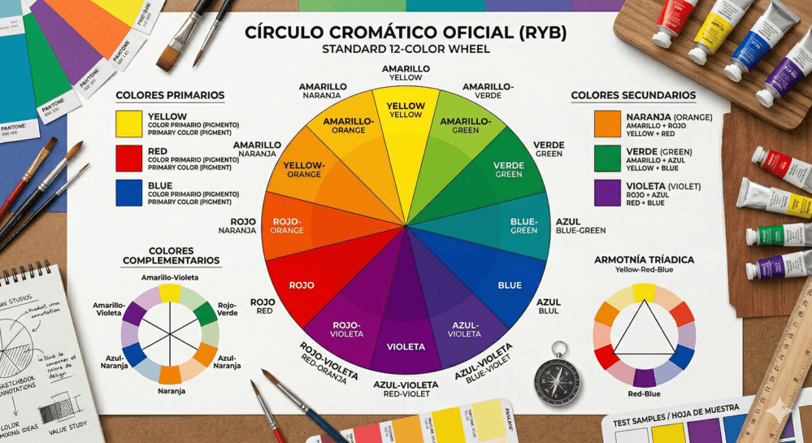
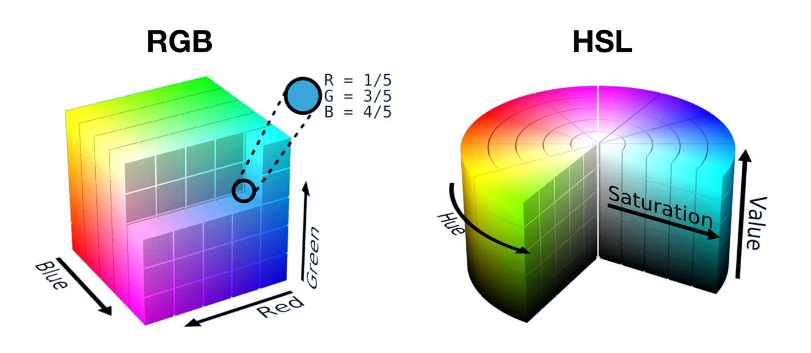
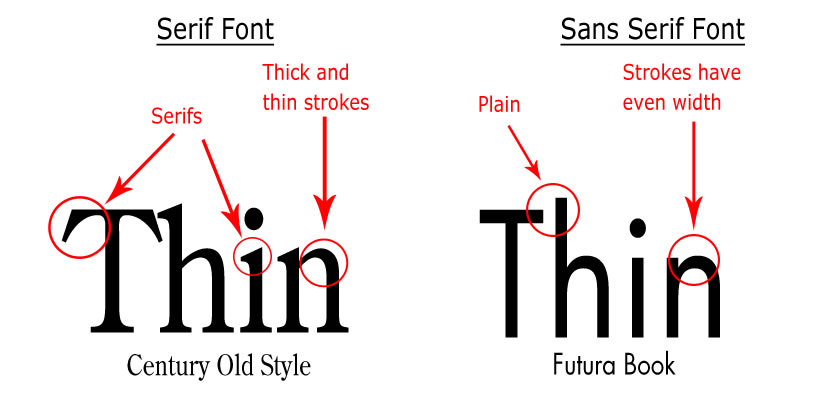
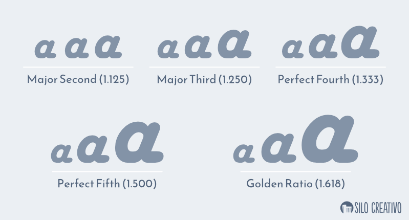

Unidad 3: Color y Tipografía en el Diseño de Interfaces Web
Objetivos de aprendizaje
Al finalizar esta unidad, el alumnado será capaz de:
- Aplicar la teoría del color al diseño de interfaces web, seleccionando paletas cromáticas que respeten los principios de armonía, contraste WCAG y accesibilidad para personas con daltonismo.
- Distinguir y utilizar los modelos de color RGB y HSL en CSS, comprendiendo sus diferencias y seleccionando el más adecuado en cada contexto.
- Crear y documentar paletas de color completas (primarios, secundarios, acento, neutros, semánticos) implementadas mediante variables CSS.
- Identificar y clasificar familias tipográficas según su anatomía, clasificación histórica y función comunicativa.
- Implementar escalas tipográficas responsivas utilizando funciones CSS modernas como clamp() y unidades relativas.
- Integrar fuentes web externas (Google Fonts) optimizando el rendimiento de carga mediante estrategias como font-display.
- Establecer ritmo vertical y limitación de ancho de línea para garantizar una experiencia de lectura óptima.
- Analizar críticamente las elecciones cromáticas y tipográficas de interfaces reales (Stripe, Apple, Notion) y justificar su efectividad.
Relación con los Resultados de Aprendizaje
- RA1. Planifica la creación de una interfaz web valorando y aplicando especificaciones de diseño. El análisis y selección de los colores y tipografías adecuados para su visualización en pantalla (CE 1.b) es un paso previo a cualquier diseño: esta unidad enseña a elegir paletas cromáticas y sistemas tipográficos coherentes con el contexto del proyecto.
- RA2. Crea interfaces web homogéneos definiendo y aplicando estilos. El color y la tipografía son los dos pilares de la unidad visual; su implementación mediante variables CSS y hojas de estilo externas garantiza la coherencia estética de toda la interfaz (CE 2.c, CE 2.g).
- RA5. Desarrolla interfaces web accesibles, analizando las pautas establecidas y aplicando técnicas de verificación. El estudio de los ratios de contraste WCAG, el daltonismo y las herramientas de verificación cromática capacita al alumnado para evaluar y garantizar la accesibilidad visual de sus interfaces (CE 5.c).
Conocimientos previos
- Fundamentos de CSS: Selectores, modelo de caja, unidades de medida, herencia y cascada. Se recomienda haber practicado la vinculación de hojas de estilo externas.
- Principios de diseño visual: Conceptos de jerarquía, contraste, unidad y equilibrio estudiados en la Unidad 1.
- Accesibilidad web básica: Nociones generales sobre la importancia de la accesibilidad en la web.
- Herramientas: Manejo del inspector de elementos de las DevTools del navegador.
Contenidos
BLOQUE 1: COLOR
1.1 Teoría del color
- Círculo cromático: estructura y funcionamiento
- Colores primarios, secundarios y terciarios en el modelo tradicional y digital
- Armonías cromáticas: complementarios, análogos, triádicos, monocromáticos, complementarios divididos, tetrádicos
1.2 Modelos de color
- RGB: modelo aditivo para pantallas (notación hexadecimal, rgb(), porcentajes)
- HSL: matiz (hue), saturación (saturation), luminosidad (lightness)
- Comparativa entre modelos y casos de uso en CSS
1.3 Contraste de color
- Ratios WCAG 2.1: nivel AA (4.5:1 texto normal, 3:1 texto grande), nivel AAA (7:1, 4.5:1)
- Herramientas de verificación: WebAIM Contrast Checker, Stark, Chrome DevTools
- Cálculo práctico del ratio de contraste
1.4 Accesibilidad del color
- Daltonismo: protanopia, deuteranopia, tritanopia y acromatopsia
- Principio: no usar solo el color para transmitir información
- Complementos visuales: iconos, texto, patrones
1.5 Paletas de color
- Estructura de una paleta profesional: colores primarios, secundarios, acento, neutros, semánticos
- Colores semánticos: éxito (success), error (error), advertencia (warning), información (info)
- Implementación con variables CSS (:root)
1.6 Psicología del color
- Significados culturales de los colores principales
- Emociones asociadas a cada color
- Contexto cultural: diferencias entre culturas occidental, oriental y otras
1.7 Herramientas de color
- Coolors, Adobe Color, Paletton, Color Hunt
- Flujo de trabajo para crear y documentar paletas
BLOQUE 2: TIPOGRAFÍA
2.1 Anatomía tipográfica
- Ascendente, descendente, línea base, altura x, serif, terminal, asta, bucle, lágrima
2.2 Clasificación tipográfica
- Serif: tradicional (Garamond), transicional (Times New Roman), moderna (Bodoni), egipcia (Rockwell)
- Sans-serif: grotesca (Akzidenz-Grotesk), humanista (Gill Sans), geométrica (Futura)
- Display, Script, Monospace
2.3 Escalas tipográficas
- Escala de cuarto mayor (1.333), escala de quinta perfecta (1.5), escala áurea (1.618)
- Implementación con CSS clamp() para tipografía responsive
2.4 Ritmo vertical
- Line-height: valores recomendados (1.4-1.6 para cuerpo de texto)
- Espaciado entre párrafos y elementos
- Grid baseline: concepto y beneficios
2.5 Google Fonts e integración web
- Selección de fuentes y pairing tipográfico
- Optimización de carga: font-display: swap
- Estrategias de carga para evitar FOIT y FOUT
2.6 Tipografía responsive
- Unidades relativas: em, rem, vw, %
- Función clamp() para tipografía fluida
- Limitación de ancho de línea (60-75 caracteres)
2.7 Propiedades CSS tipográficas
- font-family, font-size, font-weight, font-style, line-height
- letter-spacing, text-transform, text-decoration, text-align
Desarrollo teórico
BLOQUE 1: COLOR
1.1 Teoría del color
Definición: teoría del color
La teoría del color es el conjunto de principios y directrices que rigen la combinación y el uso del color en cualquier disciplina visual, desde la pintura clásica hasta el diseño de interfaces digitales. Comprender estos principios permite al diseñador tomar decisiones cromáticas fundamentadas, en lugar de basarse en preferencias personales o tendencias pasajeras.
El círculo cromático es la herramienta básica para comprender las relaciones entre colores. Se organiza colocando los colores en un círculo en un orden específico, empezando por los colores primarios:
- Primarios — rojo, amarillo y azul en el modelo tradicional de pintor; rojo, verde y azul en el modelo digital RGB.
- Secundarios — se obtienen mezclando dos primarios en proporciones iguales: verde (azul + amarillo), naranja (rojo + amarillo) y violeta/púrpura (rojo + azul).
- Terciarios — se obtienen mezclando un primario con un secundario adyacente, generando matices como rojo-naranja, amarillo-verde o azul-violeta.
Las armonías cromáticas son combinaciones de colores que resultan visualmente agradables porque mantienen relaciones matemáticas en el círculo cromático:
- Complementarios — utilizan dos colores opuestos en el círculo (por ejemplo, azul y naranja, o rojo y verde). Es la armonía de mayor contraste visual y resulta muy efectiva para llamar la atención, pero debe usarse con moderación porque puede resultar agresiva si se aplica en grandes superficies.
- Análogos — utilizan colores adyacentes en el círculo (por ejemplo, azul, azul-verdoso y verde). Transmite calma y cohesión, y es la más común en la naturaleza.
- Triádica — utiliza tres colores equidistantes en el círculo (por ejemplo, rojo, amarillo y azul), creando composiciones vibrantes y equilibradas.
- Monocromática — utiliza variaciones en saturación y luminosidad de un único matiz, transmitiendo elegancia y sofisticación.
- Complementarios divididos — utilizan un color y los dos colores adyacentes a su complementario, ofreciendo alto contraste pero con menos tensión que la armonía complementaria directa.

1.2 Modelos de color
En el diseño web trabajamos con dos modelos de color principales: RGB y HSL. Comprender sus diferencias y cuándo utilizar cada uno es esencial para un uso eficaz del color en CSS.
El modelo RGB (Red, Green, Blue) es un modelo aditivo basado en la luz. Las pantallas emiten luz roja, verde y azul en diferentes intensidades para producir todos los colores visibles. Cuando los tres canales están al máximo (255, 255, 255) obtenemos blanco; cuando están al mínimo (0, 0, 0) obtenemos negro. En CSS, podemos especificar colores RGB mediante notación hexadecimal (#RRGGBB), notación funcional rgb(r, g, b) o rgba(r, g, b, a) para incluir transparencia. La notación hexadecimal es la más compacta: cada par de caracteres representa un canal de color en base 16, desde 00 (0 en decimal) hasta FF (255 en decimal). Por ejemplo, #FF0000 es rojo puro (máximo rojo, sin verde, sin azul).
El modelo HSL (Hue, Saturation, Lightness) representa los colores de una forma más intuitiva para los humanos:
- Matiz (Hue) — es el ángulo en el círculo cromático, medido en grados de 0 a 360: 0° (o 360°) es rojo, 120° es verde, 240° es azul.
- Saturación (Saturation) — es la intensidad del color, desde 0% (escala de grises, sin color) hasta 100% (color puro, máxima intensidad).
- Luminosidad (Lightness) — es la cantidad de luz, desde 0% (negro absoluto) hasta 100% (blanco absoluto), con el color puro en el 50%.
HSL es más intuitivo para crear variaciones de un color: para oscurecer un color en RGB hay que reducir los tres canales en proporción, mientras que en HSL basta con reducir el valor de Luminosidad. Para crear una paleta de colores, HSL permite mantener el mismo matiz y variar sistemáticamente la saturación y luminosidad para obtener versiones más claras u oscuras del mismo color.
La elección entre RGB y HSL depende del contexto:
| Modelo | Fortaleza principal | Cuándo usarlo |
|---|---|---|
| RGB | Es el formato nativo de las pantallas | Compatible con la mayoría de herramientas de diseño gráfico |
| HSL | Permite razonar sobre los colores en términos humanos | Diseño web: «quiero un azul más claro» se traduce en «reducir la saturación y aumentar la luminosidad», mientras que en RGB requiere ajustar tres canales simultáneamente |

1.3 Contraste de color y accesibilidad
El contraste de color entre texto y fondo es el factor más determinante para la legibilidad de una interfaz. Las Web Content Accessibility Guidelines (WCAG) 2.1 establecen ratios de contraste mínimos basados en investigaciones oftalmológicas con personas con distintas capacidades visuales.
El ratio de contraste se calcula con la siguiente fórmula:
(L1 + 0.05) / (L2 + 0.05)
donde L1 es la luminosidad relativa del color más claro y L2 la del más oscuro. El resultado es un número entre 1:1 (sin contraste, texto y fondo idénticos) y 21:1 (máximo contraste, negro sobre blanco). Los ratios mínimos exigidos son:
| Nivel | Texto normal | Texto grande (más de 18px, o más de 14px en negrita) |
|---|---|---|
| AA — mínimo legalmente exigible en muchos países | 4.5:1 | 3:1 |
| AAA — el más exigente | 7:1 | 4.5:1 |
Las herramientas de verificación son fundamentales porque el ojo humano no es un medidor fiable de contraste:
- WebAIM Contrast Checker — permite introducir manualmente códigos de color y devuelve el ratio.
- Stark — se integra en Figma, Sketch y Adobe XD para verificar el contraste directamente en los diseños.
- Chrome DevTools — incluyen un inspector de contraste en el panel de estilos que muestra el ratio del elemento seleccionado, indicando con iconos verdes (✓) o rojos (✗) si cumple cada nivel. Es posible también desde el inspector de elementos (flecha esquina superior izquierda) el contraste de cada uno de los elementos mostrados en la página. Por úlitmo, cuenta con una opción en la que se puede simular distintos problemas de visión, de esta forma podernos simular como verían la web las personas con alguno de estos problemas. Se acceder desde la pestaña "Accesibilty -> Rendering"
1.4 Daltonismo y accesibilidad del color
Aproximadamente el 8% de los hombres y el 0.5% de las mujeres tienen alguna forma de daltonismo. Diseñar sin tener en cuenta a estas personas significa excluir innecesariamente a una parte significativa de la audiencia. Los tipos más comunes son:
- Protanopia — ausencia de sensibilidad al rojo.
- Deuteranopia — ausencia de sensibilidad al verde.
- Tritanopia — ausencia de sensibilidad al azul, mucho más rara.
En la práctica, las personas con protanopia y deuteranopia confunden rojos con verdes y con marrones, lo que significa que cualquier información transmitida exclusivamente mediante la diferencia rojo/verde (como los mensajes de error en rojo y éxito en verde) es invisible para ellas.
No uses solo el color para transmitir información
El principio fundamental de accesibilidad cromática es: nunca uses solo el color para transmitir información. Siempre debe existir un complemento visual adicional: un icono (✓ para éxito, ✗ para error), un texto descriptivo, un patrón de relleno o un cambio de forma.
- Los gráficos de barras o de líneas deben utilizar diferentes patrones de relleno además de diferentes colores.
- Los estados de validación de formularios deben incluir un icono y un mensaje de texto, no solo un cambio de color del borde.
1.5 Paletas de color profesionales
Una paleta de color profesional para diseño web consta de varias categorías de colores, cada una con una función específica:
- Colores primarios — son los colores principales de la marca, generalmente 1 o 2. Son los que aparecen en el logotipo y en los elementos más importantes de la interfaz.
- Colores secundarios — complementan a los primarios y se utilizan para elementos de menor jerarquía.
- Color de acento — es un color vibrante que se utiliza con mucha moderación (5-10% de la interfaz) para llamar la atención sobre los botones de acción principal, las notificaciones importantes o los precios.
Los colores neutros forman la base de la interfaz: son los blancos, grises y negros que constituyen los fondos, bordes, textos secundarios y superficies. Una buena paleta de neutros suele tener entre 8 y 12 escalones, desde el blanco puro (#FFFFFF) hasta el negro puro (#000000), permitiendo gradaciones sutiles para fondos claros, oscuros y todo el rango intermedio.
Los colores semánticos comunican significado de forma universal:
- Éxito (success) — verde.
- Error (error) — rojo.
- Advertencia (warning) — amarillo o naranja.
- Información (info) — azul.
Es crucial que cada color semántico tenga al menos dos variantes: una clara para fondos (por ejemplo, fondo verde claro para mensajes de éxito) y otra oscura para texto (texto verde oscuro legible sobre el fondo claro).
1.6 Psicología del color
Los colores evocan emociones y transmiten significados que varían según el contexto cultural, pero existen patrones ampliamente reconocidos en la cultura occidental que el diseño de interfaces aprovecha:
- Azul — confianza, seguridad, profesionalidad y calma. Es el color corporativo más utilizado en tecnología y finanzas (Facebook, Twitter, LinkedIn, PayPal, American Express) precisamente porque evoca estabilidad en sectores donde la confianza del usuario es crítica.
- Rojo — urgencia, pasión, energía y peligro. Se utiliza para llamadas a la acción urgentes, notificaciones críticas y ofertas por tiempo limitado.
- Verde — naturaleza, crecimiento, salud y éxito. Es el color dominante en aplicaciones de bienestar, finanzas verdes y ecología.
- Naranja — entusiasmo, creatividad y calidez. Es menos agresivo que el rojo pero igualmente llamativo, por lo que se utiliza en CTAs que quieren transmitir energía sin urgencia.
Es importante recordar que la psicología del color no es universal: en culturas orientales, el blanco se asocia con el luto, mientras que en Occidente se asocia con la pureza. Si la audiencia del producto es global, hay que investigar los significados culturales de los colores elegidos en los principales mercados objetivo.
BLOQUE 2: TIPOGRAFÍA
2.1 Anatomía tipográfica
Anatomía tipográfica
Comprender la anatomía de las letras permite seleccionar y combinar tipografías con criterio, identificando qué características hacen que una fuente sea adecuada para un uso específico.
- Línea base — es la línea invisible sobre la que se asientan todas las letras.
- Altura x — es la altura de las letras minúsculas sin ascendentes (como la "x" o la "a"). Una altura x grande hace que la tipografía parezca más grande y sea más legible en tamaños pequeños, pero puede parecer tosca en tamaños grandes; una altura x pequeña transmite elegancia y sofisticación pero puede dificultar la legibilidad en cuerpo de texto.
- Ascendentes — son las partes de las letras que sobresalen por encima de la altura x (como en la "d", "h", "l").
- Descendentes — son las partes que cuelgan por debajo de la línea base (como en la "g", "p", "q").
Las serifas son los pequeños remates o terminales en los extremos de los trazos de las letras. Las tipografías con serifa se consideran más tradicionales y formales, y se cree que las serifas guían el ojo horizontalmente facilitando la lectura de textos largos impresos. Las tipografías sin serifa (sans-serif) se consideran más modernas y limpias, y son la elección predominante para interfaces digitales porque se renderizan mejor en pantallas de baja resolución.
2.2 Clasificación tipográfica
Las tipografías se clasifican en grandes familias según sus características históricas y formales. Las Serif se subdividen en:
- Tradicional (o humanista) — con poco contraste entre trazos gruesos y finos y serifas inclinadas (ejemplo: Garamond, inspirada en la caligrafía del siglo XV).
- Transicional — con mayor contraste entre trazos y serifas más afiladas (ejemplo: Times New Roman, Baskerville, típicas del siglo XVIII).
- Moderna (o didona) — con contraste extremo entre trazos y serifas muy finas y rectas (ejemplo: Bodoni, siglo XIX).
- Egipcia (o slab serif) — con serifas gruesas y rectangulares del mismo grosor que los trazos principales (ejemplo: Rockwell, muy usada en publicidad por su impacto visual).
Las Sans-serif se subdividen en:
- Grotesca — con poco contraste y terminaciones toscas (ejemplo: Akzidenz-Grotesk, la primera sans-serif comercial del siglo XIX).
- Humanista — con formas inspiradas en la caligrafía y mayor calidez (ejemplo: Gill Sans, Frutiger, muy legibles para texto continuo).
- Geométrica — basada en formas geométricas puras (círculo, cuadrado, triángulo), con gran uniformidad y modernidad (ejemplo: Futura, Century Gothic).
Las Display son tipografías diseñadas para tamaños grandes (titulares, carteles, logotipos), con personalidad muy marcada que las hace inadecuadas para texto de cuerpo. Las Script imitan la escritura manual o caligráfica, y su uso en la web debe limitarse a elementos decorativos breves, nunca a texto de lectura. Las Monospace son tipografías donde cada carácter ocupa exactamente el mismo ancho horizontal (como en las máquinas de escribir), y son la elección para mostrar código fuente en interfaces de desarrollo.

2.3 Escalas tipográficas
Una escala tipográfica es un conjunto predefinido de tamaños de fuente que mantienen una relación matemática constante entre cada nivel. Utilizar una escala tipográfica garantiza que todos los textos de la interfaz estén armónicamente relacionados, evitando la arbitrariedad de elegir tamaños "a ojo".
| Escala | Ratio | Incrementos y uso recomendado |
|---|---|---|
| Cuarto mayor (4/3) | 1.333 | Moderados entre niveles; adecuada para interfaces con mucha información donde el espacio es valioso. |
| Quinta perfecta (3/2) | 1.5 | Más notables; adecuada para interfaces con menos densidad de información. |
| Áurea (número phi) | 1.618 | Generosos, basados en la proporción áurea; adecuada para interfaces con mucho espacio en blanco, como páginas de inicio y marketing. |
La implementación moderna de escalas tipográficas en CSS utiliza la función clamp() para crear tipografía fluida que se adapta automáticamente al ancho de la pantalla sin necesidad de media queries. La sintaxis clamp(mínimo, preferido, máximo) permite especificar un tamaño mínimo (para pantallas muy pequeñas), un tamaño preferido (basado en el ancho de la ventana, vw) y un tamaño máximo (para pantallas muy grandes). Por ejemplo, font-size: clamp(1rem, 0.8rem + 1vw, 2rem) hará que el texto crezca proporcionalmente al ancho de la pantalla entre 1rem y 2rem.

Escalas tipográficas2.4 Ritmo vertical
El ritmo vertical es la consistencia en el espaciado vertical entre todos los elementos de la interfaz (líneas de texto, párrafos, títulos, imágenes, márgenes entre secciones). Un buen ritmo vertical crea una sensación de orden y profesionalidad, mientras que un ritmo vertical inconsistente produce una sensación de desorganización.
Altura de línea recomendada
El line-height (altura de línea o interlineado) es el factor más determinante del ritmo vertical. Para texto de cuerpo en la web se recomienda un line-height entre 1.4 y 1.6 (sin unidades, para que se herede proporcionalmente al font-size).
- Inferiores a 1.3 — hacen que las líneas se toquen visualmente y dificultan el seguimiento horizontal.
- Superiores a 1.8 — crean demasiado espacio entre líneas y rompen la cohesión del párrafo.
El espaciado entre párrafos (margin-bottom) y entre secciones (margin-bottom de los headings) debe ser consistente y preferiblemente basado en múltiplos del line-height.
2.5 Google Fonts e integración web
Google Fonts es el repositorio de fuentes tipográficas gratuitas más utilizado en la web, con más de 1400 familias disponibles. La integración básica consiste en añadir una etiqueta <link> en el <head> del documento HTML, pero esta integración tiene implicaciones de rendimiento que deben gestionarse.
FOIT frente a FOUT: usa font-display: swap
El parámetro font-display: swap es crucial para la experiencia de usuario. Sin él, el navegador espera a que la fuente web se descargue completamente antes de mostrar cualquier texto (FOIT: Flash of Invisible Text), lo que puede dejar la página en blanco durante varios segundos si la conexión es lenta.
Con display=swap, el navegador muestra inmediatamente el texto con una fuente del sistema (fallback) y, cuando la fuente web se ha descargado, la reemplaza. Este comportamiento (FOUT: Flash of Unstyled Text) es mucho más usable que el FOIT porque la persona usuaria puede empezar a leer inmediatamente.
El pairing tipográfico es el arte de combinar dos o más familias tipográficas que funcionen bien juntas. La combinación clásica y más segura es una serif para titulares y una sans-serif para el cuerpo, o viceversa. También se pueden combinar dos sans-serif diferentes si tienen suficiente contraste (por ejemplo, una geométrica para titulares y una humanista para el cuerpo). La clave del buen pairing es que las tipografías sean suficientemente diferentes para crear contraste pero suficientemente similares en "espíritu" (proporciones, peso visual, contexto histórico) para no chocar.
2.6 Tipografía responsive
La tipografía responsive se adapta al dispositivo y al tamaño de pantalla utilizando unidades relativas y funciones CSS modernas. Las unidades relativas esenciales son:
em— relativa alfont-sizedel elemento padre, útil para espaciados que deben escalar con el texto.rem— relativa alfont-sizedel elemento raíz<html>, por defecto 16px en la mayoría de navegadores.vw— relativa al ancho de la ventana, 1vw = 1% del ancho.
La función clamp() es la herramienta más moderna y elegante para tipografía responsive. Permite definir un tamaño de fuente que crece proporcionalmente al ancho de pantalla pero dentro de unos límites mínimo y máximo, todo en una sola línea de CSS, sin necesidad de media queries. Por ejemplo, clamp(1.5rem, 4vw, 3rem) para un título h1 hará que en una pantalla de 320px el título mida 1.5rem, en una de 1200px mida 3rem, y en tamaños intermedios escale proporcionalmente.
Limita el ancho de línea a 60-75 caracteres
La limitación del ancho de línea es un requisito de legibilidad. Diversos estudios tipográficos indican que la longitud óptima de línea para texto continuo está entre 60 y 75 caracteres.
- Líneas más largas dificultan el seguimiento horizontal (el ojo se pierde al saltar de una línea a la siguiente).
- Líneas más cortas rompen el flujo de lectura con demasiados saltos.
En CSS, la limitación se implementa con max-width en el contenedor de texto, típicamente entre 65ch y 75ch (donde ch es la anchura del carácter "0" de la fuente actual).
Ejemplos guiados
Ejemplo 1: Paleta de color completa implementada con variables CSS
Contexto pedagógico
Este ejemplo muestra cómo estructurar una paleta de color profesional completa utilizando variables CSS (custom properties) en :root. Se definen colores primarios, secundarios, de acento, neutros (escala de 10 pasos) y semánticos (success, error, warning, info), cada uno con sus variantes claras y oscuras.
<!DOCTYPE html>
<html lang="es">
<head>
<meta charset="UTF-8">
<meta name="viewport" content="width=device-width, initial-scale=1.0">
<link rel="stylesheet" href="./styles.css">
<title>Ejemplo 1: Paleta de Color con Variables CSS</title>
<h1>Paleta de Color con Variables CSS</h1>
</head>
<body>
<h2>Colores Primarios</h2>
<div class="paleta">
<div class="muestra" style="background: var(--color-primary-50)">50: #eff6ff</div>
<div class="muestra" style="background: var(--color-primary-100)">100: #dbeafe</div>
<div class="muestra" style="background: var(--color-primary-200)">200: #bfdbfe</div>
<div class="muestra" style="background: var(--color-primary-300)">300: #93c5fd</div>
<div class="muestra" style="background: var(--color-primary-400)">400: #60a5fa</div>
<div class="muestra" style="background: var(--color-primary-500)">500: #3b82f6 ★</div>
<div class="muestra" style="background: var(--color-primary-600)">600: #2563eb</div>
<div class="muestra" style="background: var(--color-primary-700)">700: #1d4ed8</div>
<div class="muestra" style="background: var(--color-primary-800)">800: #1e40af</div>
<div class="muestra" style="background: var(--color-primary-900)">900: #1e3a8a</div>
</div>
<h2>Escala de Neutros</h2>
<div class="paleta">
<div class="muestra clara" style="background: var(--color-neutral-0)">0: #ffffff</div>
<div class="muestra clara" style="background: var(--color-neutral-50)">50: #f8fafc</div>
<div class="muestra clara" style="background: var(--color-neutral-100)">100: #f1f5f9</div>
<div class="muestra clara" style="background: var(--color-neutral-200)">200: #e2e8f0</div>
<div class="muestra clara" style="background: var(--color-neutral-300)">300: #cbd5e0</div>
<div class="muestra" style="background: var(--color-neutral-400)">400: #94a3b8</div>
<div class="muestra" style="background: var(--color-neutral-500)">500: #64748b</div>
<div class="muestra" style="background: var(--color-neutral-600)">600: #475569</div>
<div class="muestra" style="background: var(--color-neutral-700)">700: #334155</div>
<div class="muestra" style="background: var(--color-neutral-800)">800: #1e293b</div>
<div class="muestra" style="background: var(--color-neutral-900)">900: #0f172a</div>
</div>
<h2>Colores Semánticos en Acción</h2>
<div class="alert-success">✓ Operación completada con éxito. Los cambios se han guardado correctamente.</div>
<div class="alert-error">✗ Error al procesar el pago. Verifica los datos de tu tarjeta e inténtalo de nuevo.</div>
<div class="alert-warning">⚠ Tu suscripción caduca en 3 días. Renueva ahora para evitar la interrupción del servicio.</div>
<div class="alert-info">ℹ Nueva actualización disponible. La versión 3.2 incluye mejoras de rendimiento y seguridad.</div>
<button class="btn-primary">Botón Primario (usa --color-primary-500)</button>
</body>
</html>
/*
* PALETA DE COLOR COMPLETA
* Definimos todas las variables en :root
*/
:root {
/* Colores primarios de marca */
--color-primary-50: #eff6ff;
--color-primary-100: #dbeafe;
--color-primary-200: #bfdbfe;
--color-primary-300: #93c5fd;
--color-primary-400: #60a5fa;
--color-primary-500: #3b82f6; /* Color principal */
--color-primary-600: #2563eb;
--color-primary-700: #1d4ed8;
--color-primary-800: #1e40af;
--color-primary-900: #1e3a8a;
/* Color secundario */
--color-secondary-500: #8b5cf6;
--color-secondary-600: #7c3aed;
/* Color de acento */
--color-accent-500: #f59e0b;
--color-accent-600: #d97706;
/* Escala de neutros */
--color-neutral-0: #ffffff;
--color-neutral-50: #f8fafc;
--color-neutral-100: #f1f5f9;
--color-neutral-200: #e2e8f0;
--color-neutral-300: #cbd5e0;
--color-neutral-400: #94a3b8;
--color-neutral-500: #64748b;
--color-neutral-600: #475569;
--color-neutral-700: #334155;
--color-neutral-800: #1e293b;
--color-neutral-900: #0f172a;
/* Colores semánticos */
--color-success-100: #dcfce7;
--color-success-500: #22c55e;
--color-success-700: #15803d;
--color-error-100: #fee2e2;
--color-error-500: #ef4444;
--color-error-700: #b91c1c;
--color-warning-100: #fef3c7;
--color-warning-500: #f59e0b;
--color-warning-700: #b45309;
--color-info-100: #dbeafe;
--color-info-500: #3b82f6;
--color-info-700: #1d4ed8;
}
* { margin: 0; padding: 0; box-sizing: border-box; }
body {
font-family: 'Segoe UI', system-ui, sans-serif;
background: var(--color-neutral-50);
color: var(--color-neutral-800);
padding: 2rem;
line-height: 1.6;
}
h1 { margin-bottom: 2rem; color: var(--color-neutral-900); }
h2 { margin: 1.5rem 0 1rem; color: var(--color-neutral-800); font-size: 1.2rem; }
.paleta {
display: grid;
grid-template-columns: repeat(auto-fit, minmax(160px, 1fr));
gap: 0.75rem;
margin-bottom: 2rem;
}
.muestra {
height: 80px;
border-radius: 8px;
display: flex;
align-items: flex-end;
padding: 0.5rem;
font-size: 0.7rem;
font-family: 'Courier New', monospace;
color: #fff;
text-shadow: 0 1px 2px rgba(0,0,0,0.5);
}
.muestra.clara {
color: var(--color-neutral-800);
text-shadow: none;
}
.btn-primary {
display: inline-block;
padding: 0.75rem 1.5rem;
background: var(--color-primary-500);
color: #fff;
border: none;
border-radius: 8px;
font-weight: 600;
font-size: 0.95rem;
cursor: pointer;
transition: background 0.2s;
}
.btn-primary:hover {
background: var(--color-primary-600);
}
.alert-success {
padding: 1rem 1.25rem;
background: var(--color-success-100);
color: var(--color-success-700);
border-left: 4px solid var(--color-success-500);
border-radius: 0 8px 8px 0;
margin-bottom: 1rem;
font-size: 0.9rem;
}
.alert-error {
padding: 1rem 1.25rem;
background: var(--color-error-100);
color: var(--color-error-700);
border-left: 4px solid var(--color-error-500);
border-radius: 0 8px 8px 0;
margin-bottom: 1rem;
font-size: 0.9rem;
}
.alert-warning {
padding: 1rem 1.25rem;
background: var(--color-warning-100);
color: var(--color-warning-700);
border-left: 4px solid var(--color-warning-500);
border-radius: 0 8px 8px 0;
margin-bottom: 1rem;
font-size: 0.9rem;
}
.alert-info {
padding: 1rem 1.25rem;
background: var(--color-info-100);
color: var(--color-info-700);
border-left: 4px solid var(--color-info-500);
border-radius: 0 8px 8px 0;
margin-bottom: 1rem;
font-size: 0.9rem;
}
Explicación del resultado
Esta página muestra visualmente la paleta de color completa documentada. Las variables CSS permiten referenciar colores semánticamente (var(--color-success-100)) en lugar de recordar códigos hexadecimales. Si en el futuro se decide cambiar el color primario de azul a verde, solo hay que modificar las variables en :root y toda la interfaz se actualiza automáticamente. Esta es la principal ventaja de las variables CSS frente a los valores literales dispersos por el código.
Desglose técnico pedagógico — Etiquetas, clases y propiedades CSS
Fundamentos de variables CSS (Custom Properties) y tokens de color:
1. Estructura HTML y Semántica:
<div class="paleta">: Contenedor tipo catálogo para exponer visualmente las fichas de color (swatches).<div class="muestra">y<div class="color-box">: Bloques rectangulares que renderizan cada matiz cromático para documentar la guía de estilo.<div class="info-color">: Etiquetas de texto que indican el nombre del token (ej.--color-primary-500) y su código hexadecimal o funcional.<div class="alert alert-success">,.alert-error,.alert-warning,.alert-info: Componentes de retroalimentación que demuestran el uso práctico de los colores semánticos.
2. Reglas y Propiedades CSS:
:root: Pseudoclase estructural que apunta al elemento raíz del documento (<html>). Tiene la mayor jerarquía de herencia, por lo que cualquier variable declarada dentro estará disponible en toda la hoja de estilos.--nombre-token: #valor;: Sintaxis oficial de las variables nativas CSS (CSS Custom Properties). El prefijo obligatorio--las diferencia de las propiedades estándar.var(--nombre-token): Función CSS que recupera el valor de la variable indicada. Si el token cambia en:root, todas las reglas que lo consumen se actualizan instantáneamente.- Escala numérica (100 a 900): Convención universal en sistemas de diseño donde los valores bajos (100-200) son tonos pasteles para fondos y los altos (700-900) son tonos oscuros y densos para bordes y texto.
border-left: 4px solid var(...): Borde grueso de llamada que proporciona un ancla cromática clara a las alertas sin saturar el fondo.
Ejemplo 2: Armonías cromáticas en secciones de una landing page
Contexto pedagógico
Este ejemplo presenta cuatro secciones de una landing page, cada una diseñada con una armonía cromática diferente (complementaria, análoga, triádica y monocromática), demostrando cómo la elección de la armonía afecta a la percepción y el tono emocional de cada sección.
<!DOCTYPE html>
<html lang="es">
<head>
<meta charset="UTF-8">
<meta name="viewport" content="width=device-width, initial-scale=1.0">
<link rel="stylesheet" href="./styles.css">
<title>Ejemplo 2: Armonías Cromáticas</title>
</head>
<body>
<section class="seccion complementaria">
<span class="etiqueta">Armonía Complementaria</span>
<h2>Impulsa tu negocio digital</h2>
<p>La combinación de azul (confianza) y naranja (energía) crea una llamada a la acción poderosa y memorable. El contraste máximo atrae la mirada inmediatamente.</p>
<a href="#" class="cta">Comenzar ahora</a>
</section>
<section class="seccion analoga">
<span class="etiqueta">Armonía Análoga</span>
<h2>Crece de forma sostenible</h2>
<p>Los verdes análogos transmiten naturaleza, crecimiento y armonía. La transición suave entre colores crea una sensación de fluidez y bienestar.</p>
<a href="#" class="cta">Descubrir más</a>
</section>
<section class="seccion triadica">
<span class="etiqueta">Armonía Triádica</span>
<h2>Crea sin límites</h2>
<p>Rojo, azul y amarillo: los tres colores primarios en perfecto equilibrio. Una paleta vibrante y dinámica ideal para despertar la creatividad.</p>
<a href="#" class="cta">Explorar herramientas</a>
</section>
<section class="seccion monocromatica">
<span class="etiqueta">Armonía Monocromática</span>
<h2>La elegancia de la simplicidad</h2>
<p>Un solo matiz en múltiples intensidades. La armonía monocromática transmite sofisticación, minimalismo y una identidad visual muy definida.</p>
<a href="#" class="cta">Ver colección</a>
</section>
</body>
</html>
* { margin: 0; padding: 0; box-sizing: border-box; }
body {
font-family: 'Segoe UI', system-ui, sans-serif;
line-height: 1.6;
}
.seccion {
padding: 4rem 2rem;
text-align: center;
min-height: 350px;
display: flex;
flex-direction: column;
justify-content: center;
align-items: center;
}
.seccion h2 {
font-size: 2rem;
font-weight: 800;
margin-bottom: 1rem;
}
.seccion p {
max-width: 500px;
font-size: 1.05rem;
opacity: 0.9;
}
.seccion .etiqueta {
display: inline-block;
padding: 0.25rem 0.75rem;
border-radius: 20px;
font-size: 0.75rem;
font-weight: 700;
text-transform: uppercase;
letter-spacing: 1px;
margin-bottom: 1.5rem;
}
/*
* ARMONÍA COMPLEMENTARIA: Azul (#2563eb) + Naranja (#f97316)
* Dos colores opuestos en el círculo cromático.
* Máximo contraste, energía y vitalidad.
* Ideal para secciones que deben llamar la atención.
*/
.complementaria {
background: linear-gradient(135deg, #2563eb 0%, #1d4ed8 100%);
color: #fff;
}
.complementaria .etiqueta {
background: #f97316;
color: #fff;
}
/*
* ARMONÍA ANÁLOGA: Verde azulado + Verde + Verde amarillento
* Colores adyacentes en el círculo.
* Calma, naturaleza, cohesión.
* Ideal para secciones de bienestar, salud o medio ambiente.
*/
.analoga {
background: linear-gradient(135deg, #0d9488 0%, #059669 50%, #65a30d 100%);
color: #fff;
}
.analoga .etiqueta {
background: rgba(255,255,255,0.25);
color: #fff;
}
/*
* ARMONÍA TRIÁDICA: Rojo + Azul + Amarillo
* Tres colores equidistantes en el círculo.
* Vibrante, dinámica, equilibrada.
* Ideal para productos infantiles, creativos o lúdicos.
*/
.triadica {
background: #ffffff;
color: #1e293b;
border-top: 4px solid #ef4444;
border-bottom: 4px solid #eab308;
}
.triadica .etiqueta {
background: #3b82f6;
color: #fff;
}
/*
* ARMONÍA MONOCROMÁTICA: Variaciones de un solo matiz púrpura
* Diferentes saturaciones y luminosidades del mismo matiz.
* Elegancia, sofisticación, minimalismo.
* Ideal para marcas de lujo, portfolios, diseño editorial.
*/
.monocromatica {
background: linear-gradient(135deg, #f3e8ff 0%, #d8b4fe 50%, #a855f7 100%);
color: #4c1d95;
}
.monocromatica .etiqueta {
background: #7c3aed;
color: #fff;
}
.cta {
display: inline-block;
padding: 0.75rem 2rem;
border-radius: 8px;
font-weight: 600;
text-decoration: none;
margin-top: 1.5rem;
transition: transform 0.2s;
}
.cta:hover { transform: translateY(-2px); }
.complementaria .cta { background: #f97316; color: #fff; }
.analoga .cta { background: #fff; color: #0d9488; }
.triadica .cta { background: #3b82f6; color: #fff; }
.monocromatica .cta { background: #7c3aed; color: #fff; }
Explicación del resultado
Al hacer scroll por las cuatro secciones, la persona usuaria experimenta cómo cada armonía cromática transmite una emoción diferente. La sección complementaria (azul + naranja) es enérgica y llamativa. La análoga (verdes) es calmada y natural. La triádica (rojo, azul, amarillo) es vibrante y lúdica. La monocromática (púrpuras) es elegante y sofisticada. Ninguna sección es "mejor" que otra; cada una es adecuada para un tipo de mensaje y audiencia diferente. Se recomienda al alumnado modificar los colores en las DevTools para experimentar cómo cambia la percepción.
Desglose técnico pedagógico — Etiquetas, clases y propiedades CSS
Implementación de armonías del círculo cromático:
1. Estructura HTML y Semántica:
<section class="seccion-armonia complementaria">,.analoga,.triadica,.monocromatica: Bloques estructurales independientes (<section>) dotados de clases temáticas para aplicar cada esquema cromático.<div class="contenido">: Contenedor centrado para evitar que el texto se disperse a lo ancho de la pantalla.<h2 class="titulo-armonia">: Título de la sección que actúa como ancla visual para evaluar el contraste respecto al fondo.<a class="btn-cta">: Botón de llamada a la acción con el color de mayor tensión visual del esquema (acento).
2. Reglas y Propiedades CSS:
- Armonía complementaria (opuestos a 180° en el círculo cromático): Fondo azul frío (
#1e3a8a) combinado con botón naranja cálido (#ea580c). El choque de temperatura visual produce máxima vitalidad. - Armonía análoga (adyacentes a 30°-60°): Gama de verdes y esmeraldas (
#065f46,#10b981,#34d399). Produce serenidad y coherencia sin estridencias. - Armonía triádica (equidistantes a 120°): Combina tres vértices del círculo cromático (azul, rojo, amarillo o verde, naranja, violeta). Se modula la saturación para no abrumar.
- Armonía monocromática: Usa un único matiz (Hue) variando únicamente la luminosidad (Lightness) y saturación (Saturation), logrando la máxima unidad formal.
Ejemplo 3: Contraste WCAG — Verificación y corrección de ratios
Contexto pedagógico
Este ejemplo presenta tarjetas con diferentes combinaciones de texto y fondo, mostrando cuáles cumplen y cuáles no los niveles AA y AAA de WCAG. Incluye una sección donde se corrigen los contrastes insuficientes oscureciendo o aclarando los colores.
<!DOCTYPE html>
<html lang="es">
<head>
<meta charset="UTF-8">
<meta name="viewport" content="width=device-width, initial-scale=1.0">
<title>Ejemplo 3: Contraste WCAG</title>
<link rel="stylesheet" href="./styles.css">
</head>
<body>
<h1>Verificación de Contraste WCAG</h1>
<h2 style="text-align:center;">Combinaciones que cumplen</h2>
<div class="grid">
<div class="tarjeta cumple-aaa">
<p>Texto blanco sobre fondo oscuro</p>
<span class="ratio aaa">Ratio: 15.4:1 — Cumple AAA ✓</span>
</div>
<div class="tarjeta cumple-aa">
<p>Texto blanco sobre gris medio</p>
<span class="ratio aa">Ratio: 5.5:1 — Cumple AA ✓</span>
</div>
</div>
<h2 style="text-align:center;">Combinaciones que NO cumplen</h2>
<div class="grid">
<div class="tarjeta no-cumple">
<p>Texto gris claro sobre fondo casi blanco</p>
<span class="ratio fail">Ratio: 2.1:1 — No cumple ✗</span>
</div>
<div class="tarjeta no-cumple-2">
<p>Texto amarillo sobre fondo amarillo</p>
<span class="ratio fail">Ratio: 1.3:1 — No cumple ✗</span>
</div>
</div>
<h2 style="text-align:center;">Versiones corregidas (cumplen AA o AAA)</h2>
<div class="grid">
<div class="tarjeta corregido-1">
<p>Texto oscuro sobre fondo claro</p>
<span class="ratio aaa">Ratio: 9.1:1 — Cumple AAA ✓</span>
<small style="margin-top: 0.5rem; opacity: 0.7;">Corrección: oscurecer el texto</small>
</div>
<div class="tarjeta corregido-2">
<p>Texto claro sobre fondo oscuro</p>
<span class="ratio aa">Ratio: 5.5:1 — Cumple AA ✓</span>
<small style="margin-top: 0.5rem; opacity: 0.7;">Corrección: oscurecer el fondo</small>
</div>
</div>
</body>
</html>
* { margin: 0; padding: 0; box-sizing: border-box; }
body {
font-family: 'Segoe UI', system-ui, sans-serif;
background: #f8fafc;
padding: 2rem;
}
h1 { text-align: center; color: #0f172a; margin-bottom: 2rem; }
.grid {
display: grid;
grid-template-columns: repeat(auto-fit, minmax(280px, 1fr));
gap: 1.5rem;
max-width: 1100px;
margin: 0 auto 3rem;
}
.tarjeta {
padding: 2rem;
border-radius: 12px;
text-align: center;
min-height: 160px;
display: flex;
flex-direction: column;
justify-content: center;
align-items: center;
box-shadow: 0 2px 8px rgba(0,0,0,0.06);
}
.tarjeta p {
font-size: 1rem;
margin-bottom: 0.5rem;
}
.tarjeta .ratio {
font-size: 0.8rem;
font-family: 'Courier New', monospace;
margin-top: 0.75rem;
padding: 0.35rem 0.75rem;
border-radius: 20px;
font-weight: 600;
}
.tarjeta .ratio.aa { background: #dcfce7; color: #166534; }
.tarjeta .ratio.aaa { background: #bbf7d0; color: #14532d; }
.tarjeta .ratio.fail { background: #fee2e2; color: #991b1b; }
/*
* COMBINACIONES QUE CUMPLEN WCAG
*/
.cumple-aaa {
background: #1e293b;
color: #ffffff;
}
/* Negro sobre blanco: ratio 21:1, cumple AAA */
.cumple-aa {
background: #64748b;
color: #ffffff;
}
/* Gris medio sobre blanco: ratio ~5.5:1, cumple AA pero no AAA */
/*
* COMBINACIONES QUE NO CUMPLEN
*/
.no-cumple {
background: #f1f5f9;
color: #94a3b8;
}
/* Gris claro sobre casi blanco: ratio ~2.1:1, no cumple ni AA */
.no-cumple-2 {
background: #fef3c7;
color: #fcd34d;
}
/* Amarillo sobre amarillo claro: ratio ~1.3:1, ilegible */
/*
* CORRECCIÓN: Los mismos colores corregidos para cumplir AA/AAA
*/
.corregido-1 {
background: #f1f5f9;
color: #334155;
}
/* Fondo claro, texto oscuro: ratio ~9.1:1, cumple AAA */
.corregido-2 {
background: #92400e;
color: #fef3c7;
}
/* Fondo marrón oscuro, texto amarillo claro: ratio ~5.5:1, cumple AA */
h2 { color: #0f172a; margin: 2rem 0 1rem; }
Explicación del resultado
Las dos primeras tarjetas muestran combinaciones que cumplen los estándares WCAG y son legibles sin esfuerzo. Las dos siguientes muestran combinaciones que no cumplen: en la práctica, estas combinaciones serían ilegibles para personas con baja visión o en condiciones de mucha luz ambiental (como usar el móvil en la calle en un día soleado). Las dos últimas tarjetas muestran cómo, con pequeños ajustes (oscurecer el texto o el fondo), se puede corregir el contraste sin cambiar drásticamente el diseño.
Desglose técnico pedagógico — Etiquetas, clases y propiedades CSS
Normativa WCAG 2.1 y cálculo de ratios de luminosidad relativa:
1. Estructura HTML y Semántica:
<div class="tarjeta-contraste">: Ficha que prueba un binomio específico de color de fondo (background-color) y color de texto (color).<span class="badge-ratio">: Insignia que muestra el valor numérico exacto de contraste (ej.4.5:1,9.1:1).<span class="estado pasa">y<span class="estado falla">: Indicadores semánticos del cumplimiento de los criterios de conformidad.
2. Reglas y Propiedades CSS:
- Criterio de Éxito WCAG 1.4.3 (Contraste Mínimo - Nivel AA): Exige un ratio de al menos 4.5:1 para texto normal (<18pt o <14pt en negrita) y 3:1 para texto grande (≥18pt o ≥14pt negrita) o componentes de interfaz (bordes de campos, iconos interactivos).
- Criterio de Éxito WCAG 1.4.6 (Contraste Mejorado - Nivel AAA): Eleva la exigencia a 7:1 para texto normal y 4.5:1 para texto grande.
- Técnica de corrección: Para pasar de
2.1:1(inválido) a9.1:1(nivel AAA), se ajusta el canal de luminosidad (L en HSL o valores RGB bajos) incrementando la distancia entre el color de primer plano y el fondo. El ojo humano percibe la diferencia de luminancia, no la de tono.
Ejemplo 4: Daltonismo — No usar solo color para transmitir información
Contexto pedagógico
Este ejemplo muestra formularios con mensajes de validación que inicialmente solo usan color (rojo para error, verde para éxito) y luego versiones corregidas que añaden iconos y texto. Se incluye una simulación de cómo vería la interfaz una persona con deuteranopia.
<!DOCTYPE html>
<html lang="es">
<head>
<meta charset="UTF-8">
<meta name="viewport" content="width=device-width, initial-scale=1.0">
<title>Ejemplo 4: Daltonismo y Accesibilidad</title>
<link rel="stylesheet" href="./styles.css">
</head>
<body>
<h1>No uses solo el color para transmitir información</h1>
<div class="comparativa">
<!-- VERSIÓN INCORRECTA -->
<div class="demo solo-color">
<h2>Versión INCORRECTA: Solo color</h2>
<label>Email</label>
<input type="email" value="usuario@email.com" class="success">
<!-- Sin mensaje, sin icono. Solo el borde verde indica éxito -->
<label>Contraseña</label>
<input type="password" value="123" class="error">
<!-- Sin mensaje, sin icono. Solo el borde rojo indica error -->
<button>Registrarse</button>
<div class="simulacion">
<strong>Simulación de deuteranopia:</strong>
Una persona con deuteranopia (el tipo más común de daltonismo) vería ambos bordes como
un color similar (marrón/beige), sin poder distinguir cuál es el campo correcto y cuál el erróneo.
La interfaz ha fallado en comunicar información esencial.
</div>
</div>
<!-- VERSIÓN CORRECTA -->
<div class="demo con-icono">
<h2>Versión CORRECTA: Color + Icono + Texto</h2>
<label>Email</label>
<input type="email" value="usuario@email.com" class="success">
<div class="mensaje-validacion success">
<span class="icono">✓</span>
<span>El formato del email es correcto</span>
</div>
<label>Contraseña</label>
<input type="password" value="123" class="error">
<div class="mensaje-validacion error">
<span class="icono">✗</span>
<span>La contraseña debe tener al menos 8 caracteres</span>
</div>
<button>Registrarse</button>
<div class="simulacion">
<strong>Incluso con deuteranopia:</strong>
La persona puede leer el mensaje de texto, ver el icono (✓ o ✗) y entender
perfectamente qué campo es correcto y cuál necesita corrección.
El color es un refuerzo, no el único canal de información.
</div>
</div>
</div>
</body>
</html>
* { margin: 0; padding: 0; box-sizing: border-box; }
body {
font-family: 'Segoe UI', system-ui, sans-serif;
background: #f5f5f5;
padding: 2rem;
}
h1 { text-align: center; margin-bottom: 2rem; }
h2 { font-size: 1.1rem; margin-bottom: 1rem; color: #334155; }
.comparativa {
display: grid;
grid-template-columns: repeat(auto-fit, minmax(380px, 1fr));
gap: 2rem;
max-width: 1000px;
margin: 0 auto;
}
.demo {
background: white;
border-radius: 12px;
padding: 2rem;
box-shadow: 0 2px 8px rgba(0,0,0,0.06);
}
label {
display: block;
font-size: 0.85rem;
font-weight: 600;
color: #4a5568;
margin-bottom: 0.35rem;
}
input {
width: 100%;
padding: 0.65rem 0.85rem;
border: 2px solid #e2e8f0;
border-radius: 8px;
font-size: 0.95rem;
margin-bottom: 1rem;
transition: border-color 0.2s;
}
/*
* VERSIÓN INCORRECTA: Solo color para indicar estado
* Una persona con deuteranopia no distinguirá el borde verde del rojo.
*/
.solo-color input.error {
border-color: #ef4444;
}
.solo-color input.success {
border-color: #22c55e;
}
/*
* VERSIÓN CORRECTA: Color + Icono + Texto
* La información se transmite por TRES canales simultáneos,
* garantizando que al menos uno sea perceptible.
*/
.con-icono input.error {
border-color: #ef4444;
}
.con-icono input.success {
border-color: #22c55e;
}
.mensaje-validacion {
font-size: 0.8rem;
margin-top: -0.5rem;
margin-bottom: 1rem;
padding: 0.5rem 0.75rem;
border-radius: 6px;
display: flex;
align-items: center;
gap: 0.5rem;
}
.mensaje-validacion.error {
background: #fee2e2;
color: #b91c1c;
border: 1px solid #fecaca;
}
.mensaje-validacion.success {
background: #dcfce7;
color: #166534;
border: 1px solid #bbf7d0;
}
.icono {
font-size: 1rem;
flex-shrink: 0;
}
button {
padding: 0.75rem 1.5rem;
background: #3b82f6;
color: white;
border: none;
border-radius: 8px;
font-weight: 600;
cursor: pointer;
font-size: 0.95rem;
}
.simulacion {
margin-top: 1.5rem;
padding: 1rem;
background: #fff7ed;
border-radius: 8px;
font-size: 0.85rem;
color: #9a3412;
line-height: 1.6;
}
.simulacion strong {
display: block;
margin-bottom: 0.5rem;
}
Explicación del resultado
La versión incorrecta utiliza exclusivamente el color del borde (rojo/verde) para comunicar el estado de validación. Una persona con daltonismo no puede distinguir estos colores y, por tanto, no sabe qué campo está mal. La versión correcta añade dos canales adicionales de información: un icono (✓ o ✗, distinguible por su forma) y un mensaje de texto. Incluso si los tres canales fallaran (lo cual es improbable), la persona usuaria tiene múltiples formas de entender el estado del formulario. Se recomienda al alumnado utilizar las DevTools de Chrome (Rendering > Emulate vision deficiencies) para simular cómo se ve la versión incorrecta con diferentes tipos de daltonismo.
Desglose técnico pedagógico — Etiquetas, clases y propiedades CSS
Pautas de diseño no excluyente y accesibilidad cromática:
1. Estructura HTML y Semántica:
- Criterio WCAG 1.4.1 (Uso del Color): "El color no se usará como el único medio visual para transmitir la información, indicar una acción, solicitar una respuesta o distinguir un elemento visual".
<div class="mensaje-validacion error">: Contenedor semántico de alerta accesible que une tres canales perceptivos:- Canal 1: Color (
color: #b91c1c; border-color: #fecaca;). - Canal 2: Forma/Icono (
<span class="icono">✕</span>). - Canal 3: Texto explicativo explícito ("La contraseña debe contener al menos 8 caracteres").
- Canal 1: Color (
<span class="icono">: Elemento en línea conflex-shrink: 0;para evitar que el símbolo gráfico se deforme o aplaste si el texto explicativo ocupa varias líneas.
2. Reglas y Propiedades CSS:
display: flex; align-items: center; gap: 0.5rem;: Dispone el icono y el texto en línea con una separación uniforme.- Clases de estado (
.valido,.invalido): Modifican de forma sincronizada el color del borde del campo de entrada y el bloque de retroalimentación inferior. - Simulación visual de daltonismo: Se puede emular mediante filtros SVG o la propiedad CSS
filtercon matrices de color (url('#deuteranopia')), permitiendo a los desarrolladores comprobar cómo el rojo y el verde colapsan a tonos marrones amarillentos indistinguibles.
Ejemplo 5: Comparativa de familias tipográficas — Serif vs Sans-serif vs Monospace
Contexto pedagógico
Este ejemplo presenta el mismo texto (un fragmento de un artículo de blog) renderizado en tres familias tipográficas diferentes: una Serif (Georgia), una Sans-serif (Inter vía Google Fonts) y una Monospace (Courier New). Permite comparar la legibilidad y la "personalidad" que transmite cada una.
<!DOCTYPE html>
<html lang="es">
<head>
<meta charset="UTF-8">
<meta name="viewport" content="width=device-width, initial-scale=1.0">
<title>Ejemplo 5: Comparativa Tipográfica</title>
<!-- Precarga de Google Fonts para optimizar el rendimiento -->
<link rel="preconnect" href="https://fonts.googleapis.com">
<link rel="preconnect" href="https://fonts.gstatic.com" crossorigin>
<link href="https://fonts.googleapis.com/css2?family=Inter:wght@400;600;700&display=swap" rel="stylesheet">
</head>
<body>
<h1>Comparativa de Familias Tipográficas</h1>
<div class="comparativa">
<div class="muestra serif">
<div class="etiqueta" style="font-family: 'Segoe UI', sans-serif;">Serif — Georgia</div>
<h2>El arte de diseñar experiencias digitales</h2>
<p>
La tipografía es la voz visual del diseño web. Una buena elección tipográfica
comunica la personalidad de la marca antes de que la persona usuaria lea una
sola palabra. Las serif clásicas transmiten tradición, formalidad y autoridad
intelectual, siendo la elección natural para publicaciones editoriales, medios
de comunicación y contenido académico.
</p>
<div class="atributos">
Clasificación: Serif transicional | Altura x: media | Contraste: medio-alto<br>
Personalidad: Tradicional, formal, culta, seria
</div>
</div>
<div class="muestra sans">
<div class="etiqueta" style="font-family: 'Segoe UI', sans-serif;">Sans-serif — Inter</div>
<h2>El arte de diseñar experiencias digitales</h2>
<p>
La tipografía es la voz visual del diseño web. Una buena elección tipográfica
comunica la personalidad de la marca antes de que la persona usuaria lea una
sola palabra. Las sans-serif modernas transmiten claridad, modernidad y
eficiencia, siendo la elección predominante en interfaces digitales y
startups tecnológicas de todo el mundo.
</p>
<div class="atributos">
Clasificación: Sans-serif humanista | Altura x: alta | Contraste: bajo<br>
Personalidad: Moderna, limpia, accesible, neutral
</div>
</div>
<div class="muestra mono">
<div class="etiqueta" style="font-family: 'Segoe UI', sans-serif;">Monospace — Courier New</div>
<h2>El arte de diseñar experiencias digitales</h2>
<p>
La tipografía es la voz visual del diseño web. Una buena elección tipográfica
comunica la personalidad de la marca antes de que la persona usuaria lea una
sola palabra. Las monoespaciadas evocan el mundo del código, la terminal y
la precisión técnica.
</p>
<div class="atributos">
Clasificación: Monospace | Altura x: variable | Contraste: bajo<br>
Personalidad: Técnica, precisa, retro-tecnológica, código
</div>
</div>
</div>
</body>
</html>
* { margin: 0; padding: 0; box-sizing: border-box; }
body {
background: #f8fafc;
padding: 2rem;
}
h1 { text-align: center; color: #0f172a; margin-bottom: 2rem; }
.comparativa {
display: grid;
grid-template-columns: repeat(auto-fit, minmax(340px, 1fr));
gap: 2rem;
max-width: 1200px;
margin: 0 auto;
}
.muestra {
background: white;
border-radius: 12px;
padding: 2.5rem;
box-shadow: 0 2px 8px rgba(0,0,0,0.06);
}
.muestra .etiqueta {
font-family: 'Segoe UI', system-ui, sans-serif;
font-size: 0.7rem;
font-weight: 700;
text-transform: uppercase;
letter-spacing: 1.5px;
color: #94a3b8;
margin-bottom: 1.5rem;
}
.muestra h2 {
font-size: 1.6rem;
font-weight: 700;
color: #0f172a;
margin-bottom: 1rem;
line-height: 1.2;
}
.muestra p {
font-size: 1rem;
color: #334155;
line-height: 1.7;
}
.muestra .atributos {
margin-top: 1.5rem;
padding: 0.75rem;
background: #f8fafc;
border-radius: 8px;
font-size: 0.75rem;
color: #64748b;
font-family: 'Courier New', monospace;
}
/* Familia Serif: Georgia (fuente del sistema, no requiere carga externa) */
.serif { font-family: Georgia, 'Times New Roman', serif; }
.serif h2 { font-family: Georgia, 'Times New Roman', serif; font-weight: 700; }
.serif p { font-family: Georgia, 'Times New Roman', serif; }
/* Familia Sans-serif: Inter (Google Font) */
.sans { font-family: 'Inter', 'Segoe UI', system-ui, sans-serif; }
.sans h2 { font-family: 'Inter', sans-serif; font-weight: 700; }
.sans p { font-family: 'Inter', sans-serif; }
/* Familia Monospace: Courier New */
.mono { font-family: 'Courier New', Courier, monospace; }
.mono h2 { font-family: 'Courier New', monospace; font-weight: 700; }
.mono p { font-family: 'Courier New', monospace; }
Explicación del resultado
Al comparar las tres columnas, se aprecia claramente cómo la misma información textual se percibe de forma muy diferente según la tipografía. Georgia evoca seriedad editorial (adecuada para un periódico o una revista académica). Inter evoca modernidad tecnológica (adecuada para una startup o un SaaS). Courier New evoca código y terminal (adecuada para documentación técnica o herramientas de desarrollo). La elección tipográfica no es neutral: comunica la personalidad de la marca incluso antes de que el contenido sea leído.
Desglose técnico pedagógico — Etiquetas, clases y propiedades CSS
Familias tipográficas y pilas de fuentes (font stacks):
1. Estructura HTML y Semántica:
<div class="comparativa-tipografica">: Contenedor en tres columnas para contrastar el rendimiento visual del mismo contenido.<div class="muestra serif">,.sans,.mono: Tarjetas con clases asociadas a cada gran clasificación tipográfica.<div class="atributos">: Ficha técnica en monoespacio que documenta la anatomía de la fuente (remates, modulación, ojo medio).
2. Reglas y Propiedades CSS:
- Pila de reserva (Font Stack): Lista separada por comas (ej.
'Inter', 'Segoe UI', system-ui, sans-serif). El navegador intenta renderizar la primera fuente; si no está instalada o descargada, pasa a la siguiente hasta caer en la genérica del sistema operativo (sans-serif). - Serif (con serifa):
Georgia, 'Times New Roman', serif. Presenta remates terminales en los extremos de las astas, guiando la línea de lectura en textos impresos y editoriales. - Sans-serif (palo seco):
'Inter', 'Segoe UI', system-ui, sans-serif. Carece de remates; sus trazos limpios son ideales para pantallas digitales de cualquier resolución y densidad de píxeles. - Monospace (monoespaciada):
'Courier New', Courier, monospace. Todos los caracteres tienen exactamente la misma anchura física (la "i" ocupa el mismo espacio horizontal que la "w"), fundamental para código informático y alineación tabular.
Ejemplo 6: Escala tipográfica responsive con clamp()
Contexto pedagógico
Implementación de una escala tipográfica completa (desde caption hasta h1 hero) utilizando la función CSS clamp() para crear tamaños fluidos que se adaptan automáticamente al ancho de pantalla sin necesidad de media queries.
<!DOCTYPE html>
<html lang="es">
<head>
<meta charset="UTF-8">
<meta name="viewport" content="width=device-width, initial-scale=1.0">
<title>Ejemplo 6: Escala Tipográfica Responsive con clamp()</title>
<link rel="stylesheet" href="./styles.css">
</head>
<body>
<div class="contenedor">
<!-- Nivel 7: Hero -->
<div class="hero">
<h1>Escala Tipográfica Responsive con clamp()</h1>
<p class="texto-grande">
Redimensiona la ventana del navegador para ver cómo todos los textos
se adaptan fluidamente sin saltos bruscos ni media queries.
</p>
</div>
<!-- Nivel 6: h1 de sección -->
<section>
<h1>La revolución del diseño web moderno</h1>
<span class="caption">Publicado el 20 de mayo de 2025 — 6 min de lectura</span>
<p>
El diseño web ha evolucionado desde simples páginas de texto hasta complejas
aplicaciones interactivas. En este viaje, la tipografía ha pasado de ser una
restricción técnica (solo fuentes del sistema) a convertirse en una herramienta
de diseño con posibilidades casi ilimitadas gracias a servicios como Google Fonts
y funciones CSS como clamp().
</p>
<!-- Nivel 5: h2 -->
<h2>El problema de las media queries</h2>
<p>
Tradicionalmente, los diseñadores web definían tamaños de fuente para cada
breakpoint mediante media queries. Esto generaba "saltos" bruscos en la
tipografía al cruzar ciertos umbrales de ancho de pantalla. La función
clamp() resuelve este problema permitiendo que los tamaños escalen de forma
continua y fluida.
</p>
<!-- Nivel 4: h3 -->
<h3>Cómo funciona clamp()</h3>
<p>
La función CSS clamp() acepta tres parámetros: un valor mínimo, un valor
preferido (generalmente basado en vw para que dependa del ancho de pantalla)
y un valor máximo. El navegador calcula automáticamente el valor que cumple
las tres restricciones.
</p>
<!-- Nivel 3: h4 -->
<h4>Ejemplo práctico</h4>
<p>
Para un título h1, podríamos usar clamp(1.8rem, 1.4rem + 1.8vw, 3rem).
En una pantalla de 320px, el título medirá 1.8rem. En una pantalla de
1200px, medirá 3rem. Y en cualquier tamaño intermedio, escalará
proporcionalmente de forma suave y continua.
</p>
</section>
<div class="explicacion">
<strong>Guía de la escala implementada:</strong><br>
<code>--text-caption:</code> clamp(0.7rem, 0.65rem + 0.15vw, 0.8rem) → Para pies de foto, meta, notas<br>
<code>--text-body:</code> clamp(0.95rem, 0.85rem + 0.3vw, 1.1rem) → Base para párrafos<br>
<code>--text-large:</code> clamp(1.1rem, 0.95rem + 0.5vw, 1.35rem) → Texto destacado<br>
<code>--text-h4:</code> clamp(1.15rem, 1rem + 0.6vw, 1.5rem) → Encabezado menor<br>
<code>--text-h3:</code> clamp(1.3rem, 1.1rem + 0.8vw, 1.75rem) → Encabezado medio<br>
<code>--text-h2:</code> clamp(1.5rem, 1.25rem + 1.2vw, 2.25rem) → Encabezado mayor<br>
<code>--text-h1:</code> clamp(1.8rem, 1.4rem + 1.8vw, 3rem) → Título de página<br>
<code>--text-hero:</code> clamp(2.25rem, 1.5rem + 3vw, 4.5rem) → Hero / Display<br><br>
<strong>Para experimentar:</strong> Abre las DevTools (F12), selecciona un elemento de texto
y arrastra el valor de font-size para ver cómo cambia en tiempo real.
Redimensiona la ventana para observar la fluidez de la escala.
</div>
</div>
<!-- Indicador de tamaño de pantalla -->
<div class="indicador" id="indicador"></div>
<script src="./script.js"></script>
</body>
</html>
/*
* ESCALA TIPOGRÁFICA RESPONSIVE
*
* Utilizamos clamp(mínimo, preferido, máximo) para cada nivel.
* El valor preferido usa vw (viewport width) para crecer
* proporcionalmente al ancho de la pantalla.
*
* La escala sigue aproximadamente la proporción áurea (1.618)
* entre niveles, pero con límites mínimo y máximo para
* garantizar legibilidad en cualquier dispositivo.
*/
:root {
/* Nivel 0: Caption / Texto muy pequeño */
--text-caption: clamp(0.7rem, 0.65rem + 0.15vw, 0.8rem);
/* Nivel 1: Cuerpo de texto (base) */
--text-body: clamp(0.95rem, 0.85rem + 0.3vw, 1.1rem);
/* Nivel 2: Texto grande / destacado */
--text-large: clamp(1.1rem, 0.95rem + 0.5vw, 1.35rem);
/* Nivel 3: h4 */
--text-h4: clamp(1.15rem, 1rem + 0.6vw, 1.5rem);
/* Nivel 4: h3 */
--text-h3: clamp(1.3rem, 1.1rem + 0.8vw, 1.75rem);
/* Nivel 5: h2 */
--text-h2: clamp(1.5rem, 1.25rem + 1.2vw, 2.25rem);
/* Nivel 6: h1 */
--text-h1: clamp(1.8rem, 1.4rem + 1.8vw, 3rem);
/* Nivel 7: Hero / Display */
--text-hero: clamp(2.25rem, 1.5rem + 3vw, 4.5rem);
}
* { margin: 0; padding: 0; box-sizing: border-box; }
body {
font-family: 'Segoe UI', system-ui, sans-serif;
background: #fafafa;
color: #1e293b;
padding: 2rem;
}
.contenedor {
max-width: 800px;
margin: 0 auto;
}
.hero {
text-align: center;
padding: 3rem 0;
border-bottom: 2px solid #e2e8f0;
margin-bottom: 3rem;
}
.hero h1 {
font-size: var(--text-hero);
font-weight: 800;
line-height: 1.1;
letter-spacing: -0.5px;
color: #0f172a;
}
section {
margin-bottom: 3rem;
}
h1:not(.hero h1) {
font-size: var(--text-h1);
font-weight: 700;
color: #0f172a;
margin-bottom: 0.75rem;
}
h2 {
font-size: var(--text-h2);
font-weight: 700;
color: #1e293b;
margin: 2rem 0 1rem;
}
h3 {
font-size: var(--text-h3);
font-weight: 600;
color: #334155;
margin: 1.5rem 0 0.75rem;
}
h4 {
font-size: var(--text-h4);
font-weight: 600;
color: #475569;
margin: 1.25rem 0 0.5rem;
}
p {
font-size: var(--text-body);
line-height: 1.7;
margin-bottom: 1rem;
color: #334155;
}
.caption {
font-size: var(--text-caption);
color: #94a3b8;
text-transform: uppercase;
letter-spacing: 1px;
font-weight: 600;
}
.texto-grande {
font-size: var(--text-large);
color: #475569;
line-height: 1.6;
}
/*
* INDICADOR DEL TAMAÑO DE PANTALLA ACTUAL
* Muestra al alumnado cómo el tamaño cambia en tiempo real
* al redimensionar la ventana del navegador.
*/
.indicador {
position: fixed;
bottom: 1rem;
right: 1rem;
background: #0f172a;
color: #fff;
padding: 0.5rem 1rem;
border-radius: 8px;
font-family: 'Courier New', monospace;
font-size: 0.8rem;
opacity: 0.8;
z-index: 100;
}
.explicacion {
background: #f1f5f9;
padding: 1.5rem;
border-radius: 12px;
margin-top: 2rem;
font-size: 0.9rem;
color: #475569;
line-height: 1.8;
}
.explicacion code {
background: #e2e8f0;
padding: 0.15rem 0.4rem;
border-radius: 4px;
font-family: 'Courier New', monospace;
color: #1d4ed8;
font-size: 0.85rem;
}
Explicación del resultado
Al abrir esta página, todos los textos tienen tamaños fluidos que se adaptan automáticamente al ancho de la ventana. Si se redimensiona el navegador, se observa cómo los tamaños cambian de forma continua, sin saltos. El indicador en la esquina inferior derecha muestra el ancho actual de la pantalla. Se recomienda al alumnado probar la página en diferentes dispositivos (móvil, tableta, escritorio) o usar el modo responsive de las DevTools (Ctrl+Shift+M) y cambiar entre diferentes tamaños de dispositivo para comprobar la fluidez.
Desglose técnico pedagógico — Etiquetas, clases y propiedades CSS
Tipografía fluida moderna mediante la función matemática clamp():
1. Estructura HTML y Semántica:
- Estructura jerárquica con escala completa: titular de cabecera (
.hero-title), secciones intermedias (h1,h2,h3), párrafo destacado (.texto-grande), texto de cuerpo (p) y leyendas auxiliares (.caption). <div id="indicador" class="indicador">: Caja flotante fija (fixed) conectada al evento JavaScriptresizepara ilustrar cómo el ancho del viewport modula el cálculo dinámico en tiempo real.
2. Reglas y Propiedades CSS:
- Sintaxis
clamp(mínimo, valor_ideal_dinámico, máximo):mínimo: Tamaño en unidades relativas (rem) por debajo del cual el texto jamás menguará (garantizando legibilidad en smartphones compactos).valor_ideal_dinámico: Expresión mixta combinandoremyvw(Viewport Width, ej.1rem + 2.5vw). A medida que la pantalla se ensancha, el valor crece proporcionalmente.máximo: Tope superior enrempara evitar titulares desmedidos en monitores panorámicos 4K.
- Ventaja arquitectónica: Elimina por completo las media queries para tipografía. La interpolación es matemática y continua, erradicando los "saltos" bruscos entre puntos de ruptura (breakpoints).
Ejemplo 7: Ritmo vertical con line-height y grid baseline
Contexto pedagógico
Implementación de un ritmo vertical consistente utilizando line-height calculado y espaciado basado en una rejilla de 8px. El ejemplo muestra cómo todos los elementos (párrafos, títulos, listas) se alinean a una cuadrícula vertical invisible pero perceptible.
<!DOCTYPE html>
<html lang="es">
<head>
<meta charset="UTF-8">
<meta name="viewport" content="width=device-width, initial-scale=1.0">
<title>Ejemplo 7: Ritmo Vertical</title>
<link rel="stylesheet" href="./styles.css">
</head>
<body>
<div class="controles">
<button onclick="document.querySelector('.articulo').classList.toggle('rejilla-activada')">
Mostrar / Ocultar Rejilla de 8px
</button>
</div>
<article class="articulo rejilla-activada">
<h1>La importancia del ritmo vertical en el diseño web</h1>
<p class="meta">Diseño de Interfaces — 8 minutos de lectura</p>
<p>
El ritmo vertical es uno de esos aspectos del diseño tipográfico que rara vez
se nota cuando está bien ejecutado, pero cuya ausencia produce una sensación
inmediata de desorganización y amateurismo. Se basa en un principio simple:
todos los espaciados verticales deben ser múltiplos de una unidad base.
</p>
<p>
En este artículo, la unidad base es de 8px. Observa cómo el line-height,
los márgenes entre párrafos (24px = 3 × 8px), los márgenes de los títulos
(16px = 2 × 8px) y los espacios entre secciones (48px = 6 × 8px) son todos
múltiplos exactos de 8px. Activa y desactiva la rejilla azul para comprobarlo.
</p>
<h2>Por qué 8px como unidad base</h2>
<p>
La elección de 8px como unidad base no es arbitraria. La mayoría de los tamaños
de fuente comunes (14px, 16px, 18px, 20px) producen alturas de línea que son
múltiplos de 8px cuando se utiliza un line-height de 1.5. Por ejemplo, 16px × 1.5
= 24px = 3 × 8px. Esto hace que el texto "encaje" naturalmente en la rejilla.
</p>
<h2>Beneficios del ritmo vertical</h2>
<ul>
<li><strong>Coherencia visual:</strong> Todos los elementos se sienten parte del mismo sistema.</li>
<li><strong>Profesionalidad:</strong> La interfaz transmite cuidado y atención al detalle.</li>
<li><strong>Legibilidad:</strong> El espaciado predecible facilita el seguimiento de la lectura.</li>
<li><strong>Mantenibilidad:</strong> Las variables CSS permiten cambiar el ritmo globalmente modificando un solo valor.</li>
<li><strong>Desarrollo más rápido:</strong> No hay que decidir cada margen individualmente; se elige de una escala predefinida.</li>
</ul>
<p>
Implementar ritmo vertical no requiere herramientas especiales ni frameworks.
Basta con definir una escala de espaciado basada en una unidad (recomendación:
4px u 8px), documentarla como variables CSS, y tener la disciplina de no usar
nunca valores fuera de la escala.
</p>
</article>
<script src="./script.js"></script>
</body>
</html>
/*
* SISTEMA DE RITMO VERTICAL
*
* Definimos una unidad base de 8px.
* Todos los espaciados verticales (márgenes, paddings, line-height)
* son múltiplos de esta unidad base.
*
* El line-height base es 1.5, lo que con un font-size de 1rem (16px)
* produce una altura de línea de 24px (3 × 8px).
* Esto hace que el texto "encaje" en la rejilla de 8px.
*/
:root {
--grid-unit: 8px;
--line-height-base: 1.5;
--spacing-xs: calc(var(--grid-unit) * 1); /* 8px */
--spacing-sm: calc(var(--grid-unit) * 2); /* 16px */
--spacing-md: calc(var(--grid-unit) * 3); /* 24px */
--spacing-lg: calc(var(--grid-unit) * 4); /* 32px */
--spacing-xl: calc(var(--grid-unit) * 6); /* 48px */
--spacing-2xl: calc(var(--grid-unit) * 8); /* 64px */
--spacing-3xl: calc(var(--grid-unit) * 12); /* 96px */
}
* { margin: 0; padding: 0; box-sizing: border-box; }
body {
font-family: Georgia, 'Times New Roman', serif;
background: #fafafa;
color: #1e293b;
line-height: var(--line-height-base);
font-size: 1.05rem;
padding: var(--spacing-xl);
}
.articulo {
max-width: 700px;
margin: 0 auto;
background: #fff;
padding: var(--spacing-xl);
border-radius: 12px;
box-shadow: 0 2px 8px rgba(0,0,0,0.06);
}
/*
* TODOS los elementos tipográficos respetan la rejilla de 8px
* usando las variables de espaciado definidas.
*/
.articulo h1 {
font-family: 'Segoe UI', system-ui, sans-serif;
font-size: 2rem;
font-weight: 800;
color: #0f172a;
line-height: 1.2;
margin-bottom: var(--spacing-sm);
letter-spacing: -0.3px;
}
.articulo .meta {
font-family: 'Segoe UI', system-ui, sans-serif;
font-size: 0.8rem;
color: #94a3b8;
text-transform: uppercase;
letter-spacing: 1px;
margin-bottom: var(--spacing-lg);
}
.articulo h2 {
font-family: 'Segoe UI', system-ui, sans-serif;
font-size: 1.35rem;
font-weight: 700;
color: #1e293b;
line-height: 1.3;
margin-top: var(--spacing-xl);
margin-bottom: var(--spacing-sm);
}
.articulo p {
margin-bottom: var(--spacing-md);
font-size: 1.05rem;
line-height: 1.6;
}
.articulo ul {
margin-bottom: var(--spacing-md);
padding-left: 1.5rem;
}
.articulo li {
margin-bottom: var(--spacing-xs);
line-height: 1.6;
}
/*
* REJILLA VISUAL PARA DEMOSTRACIÓN
* Esta rejilla se puede activar/desactivar para que el alumnado
* vea cómo los elementos se alinean a los múltiplos de 8px.
*/
.rejilla-activada {
background-image:
linear-gradient(rgba(59, 130, 246, 0.08) 1px, transparent 1px);
background-size: 100% 8px;
}
.controles {
max-width: 700px;
margin: 0 auto var(--spacing-lg);
text-align: center;
}
.controles button {
padding: 0.5rem 1.25rem;
background: #3b82f6;
color: #fff;
border: none;
border-radius: 8px;
font-weight: 600;
font-size: 0.9rem;
cursor: pointer;
margin: 0 0.5rem;
transition: background 0.2s;
}
.controles button:hover {
background: #2563eb;
}
.controles button.secundario {
background: #e2e8f0;
color: #475569;
}
.controles button.secundario:hover {
background: #cbd5e0;
}
Explicación del resultado
Al abrir la página, se muestra un artículo con una rejilla de 8px superpuesta (líneas azules tenues). Todos los elementos —líneas de texto, párrafos, títulos, listas— se alinean a esta rejilla, creando un ritmo visual consistente. El botón "Mostrar / Ocultar Rejilla" permite alternar la visualización de la cuadrícula para comprobar la alineación. Sin la rejilla, el artículo se ve profesional y bien organizado; con la rejilla, se revela la estructura matemática subyacente.
Desglose técnico pedagógico — Etiquetas, clases y propiedades CSS
Construcción del ritmo vertical y el sistema de rejilla base (Baseline Grid):
1. Estructura HTML y Semántica:
<article class="articulo">: Estructura editorial donde conviven múltiples niveles de texto (h1,h2,p,ul,li).<div class="controles">: Barra de herramientas superior con botones interactivos que alternan clases CSS en el DOM (classList.toggle('rejilla-activada')).
2. Reglas y Propiedades CSS:
- Rejilla modular de 8px: Todos los márgenes (
margin-bottom), rellenos (padding) y alturas de línea (line-height) son múltiplos enteros estrictos de 8 (8px, 16px, 24px, 32px, 48px). line-height: En lugar de valores adimensionales arbitrarios, se calcula para que cada caja de texto ocupe un número exacto de filas de la rejilla. Por ejemplo, un texto de 16px conline-height: 24pxocupa exactamente 3 módulos de 8px.- Técnica de visualización de cuadrícula:
background-image: linear-gradient(rgba(59, 130, 246, 0.08) 1px, transparent 1px); background-size: 100% 8px;. Dibuja una línea horizontal semitransparente cada 8 píxeles mediante un degradado repetitivo, permitiendo auditar visualmente el ritmo sin plugins externos.
Ejemplo 8: Google Fonts con optimización de carga y pairing tipográfico
Contexto pedagógico
Este ejemplo demuestra la integración de Google Fonts con optimización de rendimiento (preconnect, font-display: swap) y presenta un pairing tipográfico profesional: Playfair Display (serif) para titulares + Source Sans 3 (sans-serif) para el cuerpo.
<!DOCTYPE html>
<html lang="es">
<head>
<meta charset="UTF-8">
<meta name="viewport" content="width=device-width, initial-scale=1.0">
<title>Ejemplo 8: Google Fonts y Pairing Tipográfico</title>
<!--
OPTIMIZACIÓN DE CARGA DE FUENTES
1. preconnect: Establece conexión temprana con los servidores de Google Fonts
para reducir la latencia de la solicitud de la fuente.
2. display=swap: Muestra inmediatamente el texto con la fuente fallback
y la reemplaza cuando la fuente web se ha descargado.
Esto evita el FOIT (Flash of Invisible Text).
3. Solo cargamos los pesos que necesitamos (400 y 700 para cada fuente)
para minimizar el tamaño de la descarga.
-->
<link rel="preconnect" href="https://fonts.googleapis.com">
<link rel="preconnect" href="https://fonts.gstatic.com" crossorigin>
<link
href="https://fonts.googleapis.com/css2?family=Playfair+Display:wght@400;700&family=Source+Sans+3:wght@400;600;700&display=swap"
rel="stylesheet"
>
</head>
<body>
<div class="contenedor">
<!-- TITULAR: Playfair Display -->
<h1>El arte invisible del pairing tipográfico</h1>
<!-- META: Source Sans 3 -->
<p class="meta">Elena Rodríguez · Diseño Editorial · 6 min de lectura</p>
<!-- ENTRADILLA: Source Sans 3 -->
<p class="entradilla">
Combinar tipografías es como maridar vinos: existen reglas, pero también
intuición. Un buen pairing tipográfico pasa desapercibido; un mal pairing
grita a los cuatro vientos que algo no encaja.
</p>
<!-- CUERPO: Source Sans 3 para lectura -->
<p>
La elección de tipografías para un proyecto web es una de las decisiones de diseño
con mayor impacto en la percepción del producto. Las tipografías comunican la
personalidad de la marca —seria o lúdica, tradicional o innovadora, técnica o
emocional— antes incluso de que la persona usuaria haya procesado el significado
de las palabras.
</p>
<h2>El contraste como principio rector</h2>
<p>
El principio más importante del pairing tipográfico es el contraste. Dos
tipografías demasiado similares compiten entre sí y generan una sensación de
incomodidad visual, como si una de ellas estuviera "ligeramente mal". Dos
tipografías muy diferentes pero bien elegidas se complementan y crean una
jerarquía visual clara y agradable.
</p>
<!-- CITA: Playfair Display para darle peso editorial -->
<blockquote>
"La tipografía es el detalle que separa el diseño amateur del diseño profesional.
No se trata de elegir fuentes bonitas, sino de elegir fuentes que trabajen juntas."
<footer>— Erik Spiekermann, diseñador tipográfico</footer>
</blockquote>
<p>
En este artículo, los titulares utilizan <strong>Playfair Display</strong>, una
serif transicional con un marcado contraste entre trazos finos y gruesos que le
confiere una elegancia atemporal. El cuerpo de texto utiliza <strong>Source Sans 3</strong>,
una sans-serif humanista de Adobe diseñada específicamente para interfaces de
usuario, con una altura x generosa que garantiza una excelente legibilidad en
pantalla incluso en tamaños pequeños.
</p>
<h2>Optimización de carga: el detalle que marca la diferencia</h2>
<p>
Cargar fuentes web tiene un coste de rendimiento. Cada familia tipográfica añade
peso a la página y puede retrasar el momento en que el texto es visible. Las
técnicas de optimización —preconnect, font-display: swap, subconjuntos— son tan
importantes como la propia elección tipográfica.
</p>
<div class="info-tecnica">
<h3>Información técnica para el alumnado</h3>
<p>
<strong>Fuentes utilizadas:</strong> Playfair Display (serif, 2 pesos: 400 y 700)
y Source Sans 3 (sans-serif, 3 pesos: 400, 600, 700).<br>
<strong>Técnicas de optimización aplicadas:</strong><br>
· <code>preconnect</code> a Google Fonts para reducir latencia DNS/TCP/TLS.<br>
· <code>font-display: swap</code> para evitar FOIT (Flash of Invisible Text).<br>
· Carga selectiva de pesos (solo los necesarios, no la familia completa).<br>
· Fallback fonts: Georgia para serif, Segoe UI/system-ui para sans-serif.<br>
<strong>Tiempo estimado de carga de fuentes:</strong> ~150-250ms en conexión 4G.<br>
<strong>Peso total de las fuentes:</strong> ~45KB (woff2 comprimido).
</p>
</div>
<p class="footer">
Este artículo es un ejemplo pedagógico para el módulo 0615 Diseño de Interfaces Web.
Las fuentes utilizadas son gratuitas y están disponibles en Google Fonts.
</p>
</div>
</body>
</html>
* { margin: 0; padding: 0; box-sizing: border-box; }
body {
background: #fefefe;
color: #1a1a1a;
line-height: 1.7;
}
/*
* PAIRING TIPOGRÁFICO:
* Playfair Display (Serif) → Titulares
* Source Sans 3 (Sans-serif) → Cuerpo de texto
*
* La combinación de una serif elegante para titulares con una sans-serif
* limpia para el cuerpo es uno de los pairings más clásicos y efectivos.
* La serif aporta personalidad y distinción; la sans-serif aporta
* legibilidad y modernidad.
*/
.contenedor {
max-width: 750px;
margin: 0 auto;
padding: 3rem 1.5rem;
}
/*
* TITULARES: Playfair Display (Serif)
* Transmite elegancia, tradición y autoridad editorial.
* Ideal para revistas, blogs literarios, sitios de moda.
*/
h1 {
font-family: 'Playfair Display', Georgia, serif;
font-size: clamp(2rem, 4vw, 3rem);
font-weight: 700;
color: #111;
line-height: 1.15;
margin-bottom: 0.5rem;
}
h2 {
font-family: 'Playfair Display', Georgia, serif;
font-size: clamp(1.5rem, 2.5vw, 1.9rem);
font-weight: 700;
color: #222;
margin-top: 2.5rem;
margin-bottom: 1rem;
line-height: 1.25;
}
/*
* CUERPO DE TEXTO: Source Sans 3 (Sans-serif)
* Excelente legibilidad en pantalla, formas limpias,
* amplia altura x que facilita la lectura en tamaños pequeños.
*/
p {
font-family: 'Source Sans 3', 'Segoe UI', system-ui, sans-serif;
font-size: 1.1rem;
margin-bottom: 1.25rem;
color: #333;
}
.meta {
font-family: 'Source Sans 3', sans-serif;
font-size: 0.85rem;
color: #888;
text-transform: uppercase;
letter-spacing: 1.5px;
margin-bottom: 2rem;
font-weight: 600;
}
.entradilla {
font-family: 'Source Sans 3', sans-serif;
font-size: 1.2rem;
color: #555;
font-weight: 400;
line-height: 1.6;
margin-bottom: 2rem;
padding-bottom: 1.5rem;
border-bottom: 1px solid #e8e8e8;
}
/*
* CITA: Combinamos ambas fuentes
* El texto de la cita usa Playfair Display para darle
* un tono más editorial y distinguido.
*/
blockquote {
font-family: 'Playfair Display', Georgia, serif;
font-size: 1.3rem;
font-style: italic;
color: #444;
border-left: 3px solid #c4a35a;
margin: 2rem 0;
padding: 1rem 2rem;
line-height: 1.5;
}
blockquote footer {
font-family: 'Source Sans 3', sans-serif;
font-size: 0.85rem;
font-style: normal;
color: #888;
margin-top: 0.75rem;
}
/*
* NOTA SOBRE OPTIMIZACIÓN
* Información visible para el alumnado sobre las técnicas empleadas
*/
.info-tecnica {
margin-top: 3rem;
padding: 1.5rem;
background: #f5f5f5;
border-radius: 8px;
font-family: 'Source Sans 3', sans-serif;
font-size: 0.85rem;
color: #555;
line-height: 1.7;
}
.info-tecnica h3 {
font-family: 'Source Sans 3', sans-serif;
font-size: 1rem;
font-weight: 700;
color: #333;
margin-bottom: 0.75rem;
}
.info-tecnica code {
background: #e8e8e8;
padding: 0.15rem 0.4rem;
border-radius: 4px;
font-size: 0.8rem;
}
/* FOOTER */
.footer {
margin-top: 2rem;
padding-top: 1.5rem;
border-top: 1px solid #e8e8e8;
font-family: 'Source Sans 3', sans-serif;
font-size: 0.85rem;
color: #888;
}
Explicación del resultado
La página muestra un artículo con un pairing tipográfico profesional: Playfair Display (serif) para titulares y Source Sans 3 (sans-serif) para el cuerpo. El contraste entre ambas tipografías es evidente pero armonioso: la serif aporta elegancia y distinción a los titulares, mientras que la sans-serif garantiza una lectura cómoda y prolongada en el cuerpo de texto. Las técnicas de optimización (preconnect, font-display: swap, carga selectiva de pesos) garantizan que el texto sea visible casi instantáneamente incluso en conexiones lentas.
Desglose técnico pedagógico — Etiquetas, clases y propiedades CSS
Técnicas de optimización de fuentes web (Web Fonts) y emparejamiento tipográfico (Pairing):
1. Estructura HTML y Semántica:
<link rel="preconnect" href="https://fonts.googleapis.com">: Resource hint que adelanta la resolución DNS y el apretón de manos (handshake) TLS/TCP con el servidor de fuentes antes de que el navegador procese el CSS.<link rel="preconnect" href="https://fonts.gstatic.com" crossorigin>: Preconexión al servidor CDN donde residen los binarios de fuentes WOFF2, con el atributo obligatoriocrossorigin.- Parámetro
display=swapen la URL de Google Fonts: Instruye al navegador para aplicar la directiva@font-face { font-display: swap; }. El texto se dibuja inmediatamente con una fuente del sistema de reserva (fallback), sustituyéndose por la fuente web tan pronto como termine su descarga, eliminando el bloqueo por "pantalla en blanco" o FOIT (Flash of Invisible Text).
2. Reglas y Propiedades CSS:
- Emparejamiento por Contraste (Pairing): Se combinan dos fuentes de personalidades opuestas pero complementarias:
- Titulares:
'Playfair Display', Georgia, serif(Serif de alto contraste con estética editorial elegante). - Cuerpo:
'Source Sans 3', 'Segoe UI', system-ui, sans-serif(Sans-serif humanista con amplia altura de la "x", maximizando la legibilidad en pantallas pequeñas).
- Titulares:
- Descarga selectiva de variantes: Se solicitan únicamente los pesos estrictamente utilizados (
wght@400;700), evitando sobrecargar la red con pesos innecesarios (100, 200, 300, 600, 900). font-style: italicenblockquote: Activa la versión cursiva auténtica de la fuente (itálica diseñada por el tipógrafo), no una inclinación artificial calculada por el motor gráfico (oblique).
Casos reales
Caso 1: Stripe — Maestría cromática y tipográfica en el sector fintech
Stripe es una plataforma de pagos en línea para empresas. Su interfaz es un caso de estudio sobre cómo el color y la tipografía pueden transformar un producto técnico y potencialmente árido (pagos, APIs, facturación) en una experiencia visualmente sofisticada y confiable.
Análisis cromático: La paleta de Stripe se basa en un azul índigo profundo (#635BFF en su tonalidad principal, recientemente actualizada a un degradado más vibrante) que transmite profesionalidad y confianza —valores críticos para una empresa que maneja dinero. El fondo del sitio web es predominantemente blanco con sutiles degradados (#f6f9fc), creando un lienzo limpio y ordenado. Lo más notable es que Stripe utiliza un único color de acento principal (el azul/púrpura), limitando el resto de la interfaz a una escala de neutros muy controlada (blancos, grises claros, grises medios para texto secundario). Esta restricción cromática produce una interfaz visualmente serena que transmite control y precisión.
Análisis tipográfico: Históricamente Stripe ha utilizado tipografías sans-serif geométricas (anteriormente Camphor, una fuente propietaria), y en su documentación técnica emplea combinaciones de sans-serif humanistas para el cuerpo. La elección de sans-serif es coherente con su posicionamiento como empresa tecnológica moderna. La jerarquía tipográfica es muy marcada: los titulares son significativamente mayores que el cuerpo de texto, y la escala tipográfica parece seguir aproximadamente la proporción áurea (1.618).
Lección para el alumnado
La interfaz de Stripe demuestra que menos es más en el uso del color. Limitar la paleta a un color de marca potente + neutros controlados + un único acento crea interfaces más profesionales que usar muchos colores. La coherencia cromática y tipográfica de Stripe es tan consistente que reconocerías un producto de Stripe incluso sin ver su logotipo, solo por el tratamiento del color y la tipografía.
Caso 2: Apple — Tipografía como identidad de marca y minimalismo cromático
Apple es universalmente reconocida por su diseño minimalista, donde color y tipografía juegan un papel protagonista en comunicar los valores de la marca: simplicidad, elegancia, innovación y premium.
Análisis cromático: La interfaz web de Apple utiliza una paleta cromática extremadamente restringida. El fondo es casi siempre blanco puro (#FFFFFF) o negro puro (#000000) en las páginas de producto. Los textos son negros o blancos según el fondo. Los colores de acento (azul para enlaces, los colores del arcoíris en el logotipo) se utilizan con una moderación casi quirúrgica. En las páginas de producto, el color proviene de las fotografías del propio producto (los colores del iPhone, los tonos metálicos del MacBook), no de la interfaz en sí. Esta estrategia hace que el producto sea el héroe visual y la interfaz desaparezca.
Análisis tipográfico: Apple utiliza San Francisco (SF Pro), una tipografía sans-serif diseñada internamente y optimizada meticulosamente para legibilidad en pantalla a todos los tamaños. SF Pro es una sans-serif humanista-geométrica con una altura x generosa, terminales ligeramente redondeados y un espaciado entre letras calibrado al píxel. Apple la utiliza en una escala tipográfica muy marcada: los titulares de las páginas de producto pueden superar los 64px (4rem) en negrita, mientras que el cuerpo de texto se mantiene alrededor de 17-19px. El contraste entre estos extremos crea un ritmo visual poderoso.
Lección para el alumnado
El caso de Apple demuestra que el diseño cromático más efectivo no es el que usa más colores, sino el que usa los colores correctos en el lugar correcto. La interfaz de Apple casi desaparece para dejar que el producto brille. En cuanto a tipografía, demuestra el valor de diseñar (o seleccionar) una tipografía específicamente para el medio digital, con atención a la altura x, el espaciado y la legibilidad a todos los tamaños.
Caso 3: Notion — Color semántico y tipografía funcional en productividad
Notion, la herramienta de productividad todo-en-uno, utiliza el color y la tipografía de una forma radicalmente diferente a Stripe o Apple: no como elementos de marca, sino como herramientas funcionales para ayudar a las personas usuarias a organizar información.
Análisis cromático: Notion utiliza una paleta de colores pastel muy característica para sus elementos semánticos. Los bloques de llamada (callouts) pueden tener fondos en rosa pastel, azul pastel, verde pastel o amarillo pastel. Los textos dentro de estos bloques mantienen un contraste cuidadosamente calibrado (texto oscuro sobre fondo pastel claro). Lo más innovador del uso del color en Notion es que permite a las personas usuarias personalizar el color de cada elemento: una página puede ser roja, otra azul, otra verde. Esta personalización cromática, que en otras herramientas sería caótica, funciona en Notion porque todos los colores comparten la misma saturación y luminosidad bajas (escala pastel), manteniendo la coherencia visual a pesar de la variedad cromática.
Análisis tipográfico: Notion utiliza una tipografía sans-serif limpia (Inter en la web, SF Pro en macOS) con una escala tipográfica muy funcional. A diferencia de Apple o Stripe, Notion no usa la tipografía como elemento de marca, sino como herramienta de jerarquía de la información. Los tres tamaños de encabezado (H1, H2, H3) tienen diferencias claras y predecibles. El cuerpo de texto utiliza un line-height generoso (1.5) para facilitar la lectura de notas largas. La opción de usar tres estilos de fuente diferentes (Default, Serif, Mono) permite a la persona usuaria elegir el tono visual que prefiera para su espacio de trabajo.
Lección para el alumnado
Notion demuestra que el color y la tipografía pueden ser herramientas funcionales, no solo elementos decorativos. La paleta pastel de Notion no busca ser "bonita" (aunque lo es); busca permitir a las personas usuarias codificar información visualmente sin generar fatiga visual ni caos cromático. La lección principal es que la coherencia cromática no requiere usar siempre los mismos colores, sino limitar las variables (en este caso, todos los colores comparten la misma saturación y luminosidad, variando solo el matiz).
Actividades guiadas
Actividad guiada 1: Creación de una paleta de color con variables CSS
Resultado de aprendizaje asociado: RA2 — Crea interfaces web homogéneas definiendo y aplicando estilos.
Objetivo: El alumnado aprenderá a estructurar una paleta de color profesional completa utilizando variables CSS, documentando cada color con su función y verificando los ratios de contraste.
Enunciado: Partiendo de un color primario asignado por el docente (diferente para cada alumno/a), el alumnado deberá:
- Generar una escala de 9 variantes del color primario (desde 50 hasta 900) utilizando una herramienta como Coolors, Paletton o la función de escala de color de Figma. La variante 500 será el color base. Las variantes 50-400 serán progresivamente más claras. Las variantes 600-900 serán progresivamente más oscuras.
- Crear una escala de neutros de al menos 8 pasos desde blanco (#FFFFFF) hasta casi negro.
- Definir 4 colores semánticos (success, error, warning, info) con sus correspondientes variantes claras para fondo y oscuras para texto.
- Implementar todo en un documento HTML con variables CSS en :root, siguiendo la nomenclatura
--color-{categoria}-{variante}. - Crear una página de demostración que muestre visualmente todas las variantes (como en el Ejemplo 1 de esta unidad).
- Para cada color semántico, verificar el ratio de contraste entre la variante de texto y la variante de fondo utilizando WebAIM Contrast Checker, y documentar si cumple AA o AAA.
Recursos necesarios: Editor de código, navegador con DevTools, acceso a Coolors (https://coolors.co) o Adobe Color.
Requisitos técnicos: HTML5, CSS3, variables CSS (custom properties). Sin frameworks.
Criterios de evaluación:
- Corrección de la nomenclatura de las variables CSS (20%).
- Progresión lógica de la escala de color (claros a oscuros en orden numérico) (20%).
- Elección adecuada de colores semánticos (20%).
- Verificación correcta de los ratios de contraste WCAG (20%).
- Calidad visual de la página de demostración (20%).
Rúbrica resumida:
| Criterio | Excelente (10) | Notable (7-8) | Suficiente (5-6) | Insuficiente (<5) |
|---|---|---|---|---|
| Variables CSS | Nomenclatura perfecta, organizadas por categorías | Nomenclatura correcta pero sin agrupar | Algunos nombres inconsistentes | Variables mal definidas o sin usar |
| Escala de color | Progresión visualmente uniforme, 9 variantes | 7-8 variantes con buena progresión | Progresión irregular o pocas variantes | Menos de 5 variantes o progresión aleatoria |
| Colores semánticos | 4 colores con variantes claras/oscuras, contraste verificado | 3-4 colores con variantes pero sin verificar contraste | Colores semánticos sin variantes | Sin colores semánticos |
| Verificación WCAG | Todos los ratios verificados y documentados | Verificación parcial | Verificación incompleta o errónea | Sin verificación de contraste |
Actividad guiada 2: Análisis de contraste en sitios web reales
Resultado de aprendizaje asociado: RA6 — Evalúa la accesibilidad de interfaces web.
Objetivo: Desarrollar la capacidad de evaluar críticamente la accesibilidad cromática de interfaces reales utilizando herramientas profesionales de verificación de contraste.
Enunciado: El alumnado, organizado en parejas, seleccionará 3 sitios web de sectores diferentes (por ejemplo: un medio de comunicación, una tienda online y la web de un organismo público). Para cada sitio, deberá:
- Identificar 5 combinaciones de texto/fondo diferentes (titular sobre fondo, cuerpo de texto, texto de botón, texto de enlace, texto de pie de página).
- Utilizar el inspector de elementos de las DevTools para obtener los códigos de color exactos de texto y fondo.
- Verificar el ratio de contraste de cada combinación con al menos dos herramientas: WebAIM Contrast Checker y el panel de Accesibilidad de Chrome DevTools.
- Registrar los resultados en una tabla indicando: elemento, color de texto, color de fondo, ratio de contraste, si cumple AA (texto normal), si cumple AA (texto grande), si cumple AAA.
- Elaborar un breve informe con los resultados, destacando las combinaciones que no cumplen y proponiendo colores alternativos que sí cumplirían.
Recursos necesarios: Navegador Chrome/Firefox con DevTools, acceso a WebAIM Contrast Checker (https://webaim.org/resources/contrastchecker/), hoja de cálculo para la tabla de resultados.
Requisitos técnicos: Manejo básico del inspector de elementos de las DevTools.
Criterios de evaluación:
- Precisión en la extracción de códigos de color (25%).
- Corrección en el cálculo/verificación del ratio de contraste (25%).
- Calidad del informe y claridad de la tabla (25%).
- Pertinencia de las propuestas de mejora (25%).
Rúbrica resumida:
| Criterio | Excelente (10) | Notable (7-8) | Suficiente (5-6) | Insuficiente (<5) |
|---|---|---|---|---|
| Extracción de colores | 15 combinaciones exactas y bien documentadas | 12-14 combinaciones | 9-11 combinaciones | Menos de 9 combinaciones |
| Verificación de ratios | Doble verificación con 2 herramientas, todos correctos | Verificación con 1 herramienta, correcta | Algunos ratios erróneos | Ratios incorrectos o no calculados |
| Informe | Bien estructurado, claro, con propuestas viables | Estructura correcta, propuestas básicas | Informe incompleto | Sin informe o muy deficiente |
Actividad guiada 3: Emparejamiento (pairing) tipográfico para una landing page
Resultado de aprendizaje asociado: RA2 — Crea interfaces web homogéneas.
Objetivo: Aprender a seleccionar y emparejar dos familias tipográficas de Google Fonts que funcionen bien juntas, implementando un pairing profesional para una landing page.
Enunciado: El docente proporcionará un briefing de proyecto: una landing page para una marca de café artesanal que quiere transmitir calidez, tradición y calidad premium. El alumnado deberá:
- Explorar Google Fonts y seleccionar 3 posibles pairings tipográficos (cada pairing = 1 tipografía para titulares + 1 tipografía para cuerpo). Al menos uno de los pairings debe incluir una serif.
- Para cada pairing, escribir una breve justificación (50-100 palabras) explicando por qué esa combinación es adecuada para la marca de café.
- Implementar los 3 pairings en una página HTML que muestre el mismo contenido (título, subtítulo, párrafo de muestra) en tres columnas, cada una con un pairing diferente.
- Aplicar las optimizaciones de carga estudiadas (preconnect, font-display: swap) en la integración de Google Fonts.
- Incluir una sección de "fallback" que demuestre cómo se vería la página si las fuentes de Google no se cargan (usando DevTools para bloquear la carga de fuentes y capturar el resultado).
- Presentar los 3 pairings al grupo y recibir feedback sobre cuál funciona mejor para la marca de café y por qué.
Recursos necesarios: Editor de código, navegador, acceso a Google Fonts (https://fonts.google.com).
Duración: 120 minutos.
Actividad guiada 4: Implementación de una escala tipográfica responsive con clamp()
Resultado de aprendizaje asociado: RA2 — Crea interfaces web homogéneas definiendo y aplicando estilos.
Objetivo: Implementar una escala tipográfica responsive completa utilizando la función CSS clamp(), comprendiendo la relación entre los valores mínimo, preferido y máximo.
Enunciado: El alumnado, trabajando individualmente, deberá:
- Partir de la escala tipográfica del Ejemplo 6 de esta unidad (8 niveles, desde caption hasta hero).
- Modificar los valores de clamp() para cada nivel de la escala, experimentando con diferentes proporciones entre niveles (probar escala áurea 1.618 y escala de quinta perfecta 1.5).
- Crear una página de demostración que muestre todos los niveles de la escala en una sola pantalla, con una regla o indicador visual del tamaño en píxeles junto a cada nivel.
- Probar la página en al menos 4 anchos de pantalla diferentes (320px, 768px, 1024px, 1440px) usando el modo responsive de las DevTools.
- Registrar en una tabla el tamaño real en píxeles de cada nivel en cada ancho de pantalla.
- Analizar los resultados: ¿la escala se mantiene proporcional en todos los anchos? ¿En qué punto se alcanza el valor máximo? ¿Hay saltos o es completamente fluida?
Recursos necesarios: Editor de código, navegador con DevTools (modo responsive).
Duración: 90 minutos.
Actividad guiada 5: Simulación de daltonismo en una interfaz propia
Resultado de aprendizaje asociado: RA6 — Evalúa la accesibilidad de interfaces web.
Objetivo: Experimentar de primera mano cómo las personas con diferentes tipos de daltonismo perciben las interfaces, y aprender a diseñar teniendo en cuenta estas condiciones.
Enunciado: El alumnado deberá:
- Crear una interfaz sencilla (un formulario de registro con validación, o un panel de control con indicadores de estado) que utilice color para transmitir información (por ejemplo: bordes rojos/verdes para validación, indicadores verde/amarillo/rojo para estado).
- Utilizar las DevTools de Chrome (Rendering > Emulate vision deficiencies) para simular cómo se ve la interfaz con protanopia, deuteranopia y tritanopia.
- Realizar capturas de pantalla de cada simulación.
- Identificar los elementos de la interfaz cuyo significado depende exclusivamente del color y que, por tanto, serían inaccesibles para personas con daltonismo.
- Rediseñar la interfaz añadiendo canales de información alternativos (iconos, texto, patrones) para cada elemento problemático identificado.
- Volver a simular el daltonismo en la versión rediseñada y verificar que ahora la información se transmite correctamente.
Recursos necesarios: Editor de código, Chrome DevTools, herramienta de captura de pantalla.
Duración: 120 minutos.
Actividades propuestas
Actividad propuesta 1: Guía de estilo cromática completa para un proyecto real
Resultado de aprendizaje asociado: RA1 y RA2.
Objetivo: Elaborar una guía de estilo cromática profesional para un proyecto web, aplicando todos los conocimientos de la unidad: teoría del color, accesibilidad, paletas y variables CSS.
Enunciado: Selecciona un proyecto web real (puede ser la web de tu centro educativo, un comercio local, una asociación o un proyecto personal) y elabora una guía de estilo cromática completa que documento:
- Análisis de la situación actual: Colores actuales, problemas de accesibilidad detectados (contraste insuficiente, dependencia exclusiva del color), inconsistencias entre páginas.
- Paleta propuesta: Colores primarios, secundarios, acento, escala de neutros (10 pasos), colores semánticos con variantes claras/oscuras. Cada color en formato hex, rgb y hsl.
- Ratios de contraste: Verificación WCAG de cada combinación texto/fondo prevista, con tabla de resultados y nivel AA/AAA alcanzado.
- Prueba de daltonismo: Simulación de la paleta con los tres tipos principales de daltonismo, identificando combinaciones problemáticas y proponiendo alternativas.
- Implementación: Archivo CSS con todas las variables definidas en :root, listo para integrar en el proyecto.
- Paleta en formato JSON o similar para que el equipo de desarrollo pueda consumir los colores programáticamente.
Recursos necesarios: Editor de código, Coolors o Adobe Color, WebAIM Contrast Checker, Chrome DevTools (simulación de daltonismo).
Requisitos técnicos: Variables CSS en :root, nomenclatura consistente, archivo CSS externo.
Criterios de evaluación:
- Calidad y coherencia de la paleta propuesta (25%).
- Corrección en la verificación de contrastes WCAG (20%).
- Atención a la accesibilidad (daltonismo, alternativas al color) (20%).
- Calidad técnica de la implementación CSS (20%).
- Claridad y utilidad de la documentación (15%).
Rúbrica resumida:
| Criterio | Excelente (10) | Notable (7-8) | Suficiente (5-6) | Insuficiente (<5) |
|---|---|---|---|---|
| Paleta | Completa, coherente, con justificación teórica | Completa pero con alguna inconsistencia | Incompleta o poco justificada | Paleta arbitraria sin criterio |
| Accesibilidad | Todos los ratios verificados, daltonismo simulado | Ratios verificados pero sin simulación | Verificación parcial | Sin verificación de accesibilidad |
| Implementación | Variables CSS bien organizadas, archivo externo | Variables correctas pero en HTML interno | Variables desorganizadas | Sin variables CSS |
Actividad propuesta 2: Comparativa de tipografías para un mismo contenido
Resultado de aprendizaje asociado: RA2.
Objetivo: Experimentar cómo la elección tipográfica afecta a la percepción del mismo contenido, desarrollando sensibilidad para seleccionar tipografías según el tono comunicativo deseado.
Enunciado: Crea una página web que muestre el mismo fragmento de texto (un artículo de 500 palabras sobre un tema neutro, como "La historia del diseño web") renderizado con 5 familias tipográficas diferentes, en 5 pestañas o columnas. Las tipografías deben incluir:
- Una serif tradicional (Georgia, Garamond o similar).
- Una serif moderna (Playfair Display o similar de Google Fonts).
- Una sans-serif humanista (Inter, Source Sans 3 o similar).
- Una sans-serif geométrica (Poppins, Montserrat o similar).
- Una tipografía de tu elección que creas que transmite "innovación tecnológica".
Para cada tipografía, incluye una valoración subjetiva (1-5 estrellas) en estos criterios: legibilidad en pantalla, legibilidad en móvil, personalidad/distinción, adecuación para texto largo, y adecuación para titulares.
Recursos necesarios: Editor de código, Google Fonts.
Requisitos técnicos: HTML, CSS, integración de Google Fonts con optimización de carga.
Criterios de evaluación:
- Correcta integración técnica de las 5 tipografías (25%).
- Calidad de las valoraciones subjetivas (argumentadas, no arbitrarias) (25%).
- Diseño de la página de comparativa (25%).
- Aplicación de optimizaciones de carga (font-display, preconnect) (25%).
Actividad propuesta 3: Auditoría de color y tipografía de la web del centro educativo
Resultado de aprendizaje asociado: RA6.
Objetivo: Aplicar los conocimientos de la unidad a un caso real y cercano, desarrollando la capacidad de análisis crítico y propuesta de mejora.
Enunciado: Realiza una auditoría completa de color y tipografía de la página web de tu instituto o centro educativo. La auditoría debe incluir:
- Inventario cromático: Identifica todos los colores utilizados en la web (extrayendo códigos con DevTools), agrúpalos por función (fondos, textos, enlaces, botones, cabecera, pie) e identifica inconsistencias (mismo elemento con distintos colores en distintas páginas).
- Análisis de contraste: Verifica el ratio de contraste de al menos 8 combinaciones texto/fondo e indica cuáles cumplen y cuáles no los niveles AA/AAA.
- Inventario tipográfico: Identifica todas las familias tipográficas, tamaños y pesos utilizados. ¿Hay una escala tipográfica consistente? ¿Se mezclan fuentes incompatibles?
- Jerarquía visual: ¿Está clara la jerarquía de tamaños? ¿Los titulares son suficientemente mayores que el cuerpo?
- Propuesta de mejora: Basándote en los hallazgos, propón una paleta de color rediseñada (con variables CSS) y una escala tipográfica unificada (con clamp()) que mejoren la coherencia y accesibilidad de la web.
- Implementación demo: Crea una página HTML que muestre un "antes y después" de la página principal del centro aplicando tu propuesta de mejora (solo color y tipografía, sin cambiar el contenido ni la estructura).
Recursos necesarios: Navegador con DevTools, WebAIM Contrast Checker, Google Fonts, editor de código.
Criterios de evaluación:
- Exhaustividad del inventario cromático y tipográfico (25%).
- Precisión del análisis de contraste WCAG (25%).
- Calidad de la propuesta de mejora (justificación teórica) (25%).
- Calidad de la implementación demo (antes/después) (25%).
Actividad propuesta 4: Diseño de un sistema de iconografía cromática accesible
Resultado de aprendizaje asociado: RA2 y RA6.
Objetivo: Diseñar un sistema de iconos con estados de color que sea accesible para personas con daltonismo, aplicando el principio de "no usar solo color".
Enunciado: Diseña un panel de control (dashboard) que utilice iconos coloreados para indicar el estado de 6 servicios o sistemas (por ejemplo: Operativo, Degradado, Interrupción, Mantenimiento, Desconocido, Apagado). El panel debe tener dos versiones:
- Versión A (solo color): Cada estado se indica ÚNICAMENTE con un color (verde para operativo, amarillo para degradado, rojo para interrupción, etc.). Los iconos son idénticos en forma.
- Versión B (color + forma + texto): Cada estado se indica con un color, una forma de icono diferente (círculo check para operativo, triángulo exclamación para degradado, cuadrado X para interrupción, etc.) Y un texto descriptivo.
Implementa ambas versiones y documenta, con capturas de pantalla simulando deuteranopia, por qué la versión B es accesible y la versión A no lo es.
Recursos necesarios: Editor de código, Chrome DevTools (simulación de daltonismo).
Requisitos técnicos: HTML, CSS, SVG para los iconos (o iconos Unicode/emoji), Grid o Flexbox para la disposición del panel.
Criterios de evaluación:
- Funcionalidad y claridad del panel de control (25%).
- Diferenciación efectiva de los 6 estados en la versión B (25%).
- Calidad del análisis de accesibilidad (simulaciones, explicaciones) (25%).
- Calidad del código HTML/CSS (25%).
Actividad propuesta 5: Tipografía responsiva para un artículo de blog multidispositivo
Resultado de aprendizaje asociado: RA2.
Objetivo: Implementar un sistema tipográfico responsive completo para un artículo de blog, optimizando la legibilidad en dispositivos móviles, tabletas y escritorio.
Enunciado: Crea una página de artículo de blog (contenido de al menos 800 palabras, título, subtítulo, metadatos, varios párrafos, al menos 2 subtítulos, una cita destacada y una lista) que implemente:
- Escala tipográfica responsive con clamp() para todos los niveles (título, subtítulos, cuerpo, metadatos, caption).
- Ancho de línea limitado (max-width en ch, entre 60 y 75 caracteres) para el cuerpo de texto.
- Ritmo vertical consistente con todos los espaciados como múltiplos de 8px.
- Una tipografía de Google Fonts para titulares y otra para cuerpo, con optimización de carga (preconnect, font-display: swap).
- Variables CSS para todos los tamaños y espaciados tipográficos.
- Una sección al final del artículo que explique las decisiones tipográficas adoptadas y cómo se ha implementado técnicamente cada una.
Recursos necesarios: Editor de código, Google Fonts.
Requisitos técnicos: HTML5 semántico (article, header, blockquote, etc.), CSS con variables y clamp(), diseño responsive (mobile-first).
Criterios de evaluación:
- Escala tipográfica responsive correctamente implementada (25%).
- Ritmo vertical y limitación de ancho de línea (25%).
- Integración de Google Fonts con optimización (25%).
- Documentación de las decisiones tipográficas (25%).
Actividades de ampliación
Actividad de ampliación 1: Creación de una tipografía variable interactiva
Enunciado: Investiga el concepto de "variable fonts" (fuentes variables) y crea una página interactiva que permita a la persona usuaria modificar los ejes de una fuente variable (peso, anchura, inclinación, tamaño óptico) mediante sliders y ver el resultado en tiempo real. Utiliza una fuente variable gratuita de Google Fonts (como Roboto Flex, Inter, o cualquier otra que soporte ejes variables). La página debe explicar qué es una fuente variable, qué ventajas ofrece frente a las fuentes tradicionales (menor peso de descarga, infinitas variaciones, animabilidad) y mostrar ejemplos de casos de uso.
Criterios de evaluación:
- Corrección técnica en la implementación de la fuente variable (30%).
- Diseño y usabilidad de la interfaz de control (sliders) (30%).
- Calidad de la explicación pedagógica sobre fuentes variables (20%).
- Creatividad en los ejemplos de uso (20%).
Actividad de ampliación 2: Investigación sobre psicología del color en diferentes culturas
Enunciado: Investiga cómo los significados de los colores varían en al menos 4 culturas diferentes (por ejemplo: occidental/europea, china, japonesa, árabe, india, africana subsahariana). Para cada cultura, documenta el significado de los 6 colores principales (rojo, azul, verde, amarillo, blanco, negro) y proporciona ejemplos de interfaces o marcas de esa cultura que utilicen el color de forma culturalmente específica. Elabora un informe (1500-2000 palabras) con tus hallazgos y una guía práctica para diseñadores que trabajen en productos globales: ¿qué colores son "seguros" (significado similar en todas las culturas) y cuáles son "peligrosos" (significados opuestos en diferentes culturas)?
Criterios de evaluación:
- Profundidad y calidad de la investigación cultural (35%).
- Pertinencia de los ejemplos de interfaces/marcas (25%).
- Utilidad práctica de la guía para diseñadores globales (25%).
- Calidad de la redacción y presentación del informe (15%).
Actividad de ampliación 3: Desarrollo de una herramienta de verificación de contraste accesible
Enunciado: Construye una aplicación web que funcione como verificador de contraste WCAG accesible. La aplicación debe permitir: (a) introducir dos colores (texto y fondo) en formato hex, rgb o hsl, (b) mostrar el ratio de contraste calculado con precisión, (c) indicar visualmente si cumple AA y AAA para texto normal y texto grande, (d) mostrar una previsualización de texto real con esos colores, (e) sugerir colores alternativos que sí cumplan los criterios si los introducidos no lo hacen, (f) simular cómo se vería la combinación con los tres tipos principales de daltonismo, y (g) mantener un historial de las últimas 5 combinaciones verificadas. La aplicación debe ser, en sí misma, un ejemplo de buena accesibilidad (cumplir WCAG AA, ser navegable por teclado, tener etiquetas ARIA cuando sea necesario).
Criterios de evaluación:
- Precisión del cálculo del ratio de contraste (25%).
- Funcionalidad completa de la herramienta (25%).
- Accesibilidad de la propia herramienta (25%).
- Calidad del código y diseño visual (25%).
Buenas prácticas
-
Define tu paleta de color con variables CSS desde el primer día del proyecto. No esperes a tener "el diseño final" para definir las variables. Empezar con variables CSS (aunque los colores cambien después) te obliga a pensar en sistema en lugar de en elementos individuales. La nomenclatura semántica (
--color-primary-500,--color-success-100) documenta las decisiones de diseño en el propio código y facilita la colaboración entre diseñadores y desarrolladores. -
Verifica el contraste antes de aprobar cualquier decisión cromática. El ojo humano es un pésimo medidor de contraste por tres razones: se adapta a las condiciones de luz (lo que parece suficiente contraste en una habitación oscura puede ser insuficiente a pleno sol), es subjetivo (cada persona percibe el contraste de forma ligeramente diferente), y no puede cuantificar (no puedes "ver" si el ratio es 4.3:1 o 5.1:1). Utiliza siempre una herramienta de verificación: WebAIM Contrast Checker, Stark o el panel de Accesibilidad de Chrome DevTools.
-
Limita las familias tipográficas a un máximo de 2 por proyecto. Cada familia tipográfica adicional añade peso de descarga, complejidad de mantenimiento y ruido visual. Si necesitas más de 2 familias, probablemente tienes un problema de diseño, no de tipografía. La combinación más segura y profesional es una tipografía para titulares y otra para cuerpo. Si tu diseño requiere más variedad, explora los pesos y estilos dentro de una misma familia (light, regular, medium, bold, black) antes de añadir una segunda familia.
-
Utiliza clamp() para tipografía responsive en lugar de media queries. La función clamp() produce transiciones fluidas entre tamaños, mientras que las media queries producen saltos bruscos. Además, clamp() es más fácil de mantener (una línea de CSS) y más robusta (no depende de breakpoints específicos que pueden quedar obsoletos). La única excepción son los cambios drásticos de diseño (como pasar de una columna a dos columnas), que sí requieren media queries.
-
Proporciona siempre alternativas al color para información crítica. Si un mensaje de error se indica solo con un borde rojo, una persona con deuteranopia no lo verá. Añade siempre un icono y/o un texto descriptivo. Aplica este principio especialmente en: estados de validación de formularios, indicadores de estado (online/offline, activo/inactivo), gráficos y visualizaciones de datos, y notificaciones del sistema.
Errores frecuentes
-
Usar colores puros (rojo #FF0000, verde #00FF00, azul #0000FF) en diseño de interfaces. Los colores puros (100% de saturación y 100% de luminosidad en uno o dos canales) vibran en pantalla, fatigan la vista y producen halos cromáticos (chromatic aberration) en los bordes. En diseño profesional, ningún color debe usar valores extremos (0 o 255) a menos que sea blanco puro o negro puro. Los colores deben tener siempre un ligero matiz: en lugar de
#FF0000, usar#E53E3E; en lugar de#00FF00, usar#38A169; en lugar de#0000FF, usar#3182CE. -
Mezclar más de 2 familias tipográficas en un mismo proyecto o usar tipografías con poca altura x para texto de cuerpo. Cuantas más familias tipográficas, más ruido visual y más peso de descarga. Antes de añadir una tercera familia, pregúntate si puedes conseguir el mismo efecto con variaciones de peso, estilo o tamaño dentro de las dos familias existentes. En cuanto a la altura x, las tipografías con altura x pequeña (como muchas serif clásicas) son elegantes pero difíciles de leer en tamaños de cuerpo en pantalla, especialmente en dispositivos móviles.
-
Usar line-height con unidades (px, em) en lugar de valores sin unidad. Escribir
line-height: 24pxoline-height: 1.5emfija la altura de línea a un valor concreto que no escala si el font-size cambia. Escribirline-height: 1.5(sin unidad) hace que la altura de línea sea siempre 1.5 veces elfont-sizeactual del elemento. Esto es especialmente importante en diseño responsive, donde los tamaños de fuente pueden cambiar conclamp()y las alturas de línea deben adaptarse proporcionalmente. -
Ignorar el ancho de línea y permitir que el texto ocupe todo el ancho de la pantalla. En un monitor de 27 pulgadas (2560px de ancho), una línea de texto que ocupe todo el ancho puede tener más de 200 caracteres. Leer líneas tan largas es agotador porque el ojo debe recorrer una gran distancia horizontal y luego encontrar el inicio de la siguiente línea sin perderse. La solución es limitar el ancho del contenedor de texto con
max-width: 65cho similar, y centrar el contenedor conmargin: 0 auto. -
Definir paletas de color "a ojo" sin verificar el daltonismo ni el contraste, y no documentar los colores con variables CSS. Diseñar colores basándose únicamente en la percepción personal es una mala práctica porque ignora a aproximadamente el 8% de los hombres y el 0.5% de las mujeres que tienen daltonismo. Simular siempre la paleta con herramientas de simulación de daltonismo antes de aprobarla. Y si los colores no están documentados como variables CSS, cualquier cambio futuro requerirá buscar y reemplazar manualmente cada aparición del código de color en todo el proyecto.
Resumen
Esta unidad ha abordado las dos herramientas fundamentales del diseño visual de interfaces: el color y la tipografía. Lejos de ser meros adornos estéticos, el color y la tipografía son los vehículos principales a través de los cuales una interfaz comunica su identidad, establece jerarquías, guía la atención, transmite emociones y garantiza la accesibilidad.
En el bloque de color, se ha estudiado la teoría cromática desde sus fundamentos (círculo cromático, armonías) hasta su implementación técnica (variables CSS, modelos RGB/HSL). Se ha hecho especial énfasis en la accesibilidad cromática, abordando los ratios de contraste WCAG, las herramientas de verificación y las estrategias para diseñar interfaces usables por personas con daltonismo. Las paletas de color se han presentado como sistemas estructurados (primarios, secundarios, acento, neutros, semánticos) que deben documentarse e implementarse con variables CSS.
En el bloque de tipografía, se ha recorrido el camino desde la anatomía de la letra hasta la implementación de sistemas tipográficos responsivos completos con clamp(). La clasificación tipográfica proporciona el vocabulario para seleccionar fuentes con criterio; las escalas tipográficas y el ritmo vertical proporcionan las reglas para combinarlas; y las técnicas de optimización de carga (preconnect, font-display: swap) garantizan que la belleza tipográfica no comprometa el rendimiento.
Los casos de estudio de Stripe, Apple y Notion han demostrado tres filosofías diferentes pero igualmente válidas en el uso del color y la tipografía: la elegancia profesional de Stripe, el minimalismo radical de Apple, y la funcionalidad cromática de Notion. Los tres comparten, sin embargo, un denominador común: la coherencia. Ninguno de ellos utiliza colores o tipografías de forma arbitraria; cada decisión cromática y tipográfica está justificada y documentada.
Las actividades propuestas invitan al alumnado a pasar de la teoría a la práctica, construyendo paletas, implementando escalas tipográficas, verificando accesibilidad y auditando interfaces reales. El objetivo último es que cada estudiante termine esta unidad con la capacidad de tomar decisiones informadas sobre color y tipografía, y con las habilidades técnicas para implementarlas profesionalmente en hojas de estilo CSS.
Recursos complementarios
Herramientas de color
- Coolors (https://coolors.co) — Generador de paletas de color. Presiona espacio para generar combinaciones aleatorias. Permite bloquear colores que te gusten y seguir generando el resto.
- Adobe Color (https://color.adobe.com) — Herramienta profesional para crear paletas basadas en reglas de armonía cromática (complementarios, análogos, triádicos, etc.). Extrae paletas de imágenes.
- Paletton (https://paletton.com) — Herramienta para explorar armonías cromáticas con previsualización en mockups de interfaz.
- WebAIM Contrast Checker (https://webaim.org/resources/contrastchecker/) — El verificador de contraste de referencia.
- Stark (https://www.getstark.co) — Plugin para Figma, Sketch y Adobe XD que verifica contraste y simula daltonismo directamente en los diseños.
- Color Blindness Simulator (integradas en Chrome DevTools: Rendering > Emulate vision deficiencies) — Simula protanopia, deuteranopia, tritanopia y acromatopsia.
- Khroma (https://www.khroma.co) — Entrenador de color con IA que aprende tus preferencias cromáticas y genera paletas personalizadas.
Herramientas de tipografía
- Google Fonts (https://fonts.google.com) — Más de 1400 familias tipográficas gratuitas con previsualización, pairing suggestions y datos de rendimiento.
- FontPair (https://www.fontpair.co) — Colección curada de pairings tipográficos de Google Fonts, con ejemplos visuales.
- Type Scale (https://type-scale.com) — Herramienta para previsualizar escalas tipográficas con diferentes proporciones (áurea, cuarto mayor, quinta perfecta, etc.).
- Wakamai Fondue (https://wakamaifondue.com) — Analiza una fuente tipográfica y muestra todas sus características OpenType, pesos, y capacidades.
- FontDrop (https://fontdrop.info) — Arrastra un archivo de fuente y analiza todas sus características, glifos y metadatos.
- Variable Fonts (https://variablefonts.io) — Recurso sobre fuentes variables, con ejemplos interactivos y casos de uso.
Lecturas recomendadas
- Tidwell, Jenifer. (2020). Designing Interfaces: Patterns for Effective Interaction Design. O'Reilly. — Patrones de diseño de interfaz con un fuerte componente de color y tipografía.
- Bringhurst, Robert. (2013). The Elements of Typographic Style. Hartley & Marks. — La biblia del diseño tipográfico. Aunque enfocado a imprenta, sus principios son directamente aplicables a la web.
- Monteiro, Mike. (2012). Design is a Job. A Book Apart. — Una lectura sobre la profesionalización del diseño web, incluyendo secciones brillantes sobre cómo defender decisiones de diseño (como la elección de colores y fuentes) frente a clientes.
- WCAG 2.1 en español — La traducción oficial de las pautas de accesibilidad, con secciones específicas sobre contraste y uso del color. Disponible en https://www.w3.org/WAI/WCAG21/quickref/
- Google Material Design — The Color System (https://material.io/design/color) — La guía de color del sistema de diseño de Google, con ejemplos de cómo crear paletas accesibles con la nomenclatura 50-900.
Vídeos y cursos
- "The Science of Color Perception" — Charla de la Dra. Bevil Conway (NIH) sobre cómo el cerebro procesa el color, con implicaciones directas para el diseño de interfaces.
- "Typography for Developers" — Curso gratuito en YouTube de Kevin Powell que cubre la implementación práctica de sistemas tipográficos en CSS.
- "Designing with Color for Accessibility" — Taller de Google Design sobre cómo elegir colores que cumplan WCAG sin sacrificar la estética.